Este livro explica o gamão a quem não sabe nada do jogo, do zero e passo a passo. Ele tem seis capítulos: introdução ao jogo, o tabuleiro e a preparação, as regras, como jogar melhor, como usar o Peças e Dados e um capítulo de referência. Se você ler os capítulos em ordem, ao final poderá disputar seu primeiro jogo seguindo as regras; quem já conhece o gamão pode ir direto ao capítulo 3 ou 4.
Como ler as imagens? As imagens foram tiradas do próprio Peças e Dados e mostram o tabuleiro do jogo. Você está embaixo; as peças cor de creme são suas, e as marrom-escuras são do adversário. O seu quadrante interno fica no canto inferior direito, e as peças retiradas vão para a bandeja verde à direita do tabuleiro. Os números das casas, as setas e os contornos coloridos foram acrescentados às imagens depois; o tabuleiro do app não tem números. Os números são sempre escritos do seu ponto de vista: 1 é a casa mais à direita do seu quadrante interno, e 24 é a casa mais à direita do quadrante interno do adversário. As setas mostram para onde a peça vai, e o numerozinho na seta indica com qual dado ela foi jogada; os dados no tabuleiro são os números tirados naquele lance.
Dois conjuntos de regras. O Peças e Dados oferece tanto as regras internacionais (com cubo de dobra) quanto as regras mais difundidas do tavla turco. As regras básicas são as mesmas nos dois; os aspectos em que diferem são indicados nas seções correspondentes, e o capítulo 2 traz uma tabela comparativa (Tabela 2.1).
Capítulo 1
Primeiros passos
Este capítulo é para quem não conhece nada de gamão: um início rápido em sete itens, uma breve história do jogo e de seus parentes, o objetivo do jogo e o material necessário.
1.1 Início rápido
Se você quer entender o jogo já, sem entrar em detalhes, estes sete itens bastam. Cada um deles é explicado em detalhes nos próximos capítulos.
Objetivo: Leve suas 15 peças ao redor do tabuleiro até o seu quadrante interno, no canto inferior direito, e depois retire-as do tabuleiro. Vence quem terminar primeiro.
Sua vez: A cada vez, você rola dois dados. Cada dado faz uma peça avançar esse número de casas. Se sair o mesmo número nos dois (um duplo), você faz quatro jogadas.
Direção: Suas peças andam sempre no sentido dos números decrescentes, rumo ao seu quadrante interno. Não se anda para trás.
Onde parar: Numa casa vazia, junto às suas próprias peças ou sobre uma peça solitária do adversário. Não se pode parar numa casa com duas ou mais peças do adversário (um ponto).
Captura: Se você parar sobre uma peça do adversário que esteja sozinha, você a captura e ela vai para a barra, no meio do tabuleiro. Se uma peça sua for capturada, a primeira coisa a fazer na sua vez é fazê-la entrar de novo no jogo pelo quadrante interno do adversário; enquanto houver peça sua esperando na barra, nenhuma outra peça pode ser jogada.
Obrigação: Você é obrigado a jogar o dado que puder ser jogado; se os dois não couberem juntos, jogue o maior.
Retirada: Quando todas as suas peças estiverem no seu quadrante interno, você começa a retirar peças da casa que corresponde ao número do dado. Se terminar antes que o adversário tenha retirado alguma peça, você faz um gammon e ganha 2 pontos.
1.2 Breve história do gamão
O gamão pertence a uma das famílias de jogos mais antigas que ainda se jogam hoje. Jogos com dados e peças, em que as peças apostam corrida até o fim de um percurso, são conhecidos há cerca de 5.000 anos; as regras atuais, por sua vez, foram se firmando aos poucos ao longo dos séculos, numa viagem que vai da Mesopotâmia a Roma e do Irã aos cafés otomanos.
Primeiros vestígios. Os vestígios de jogos de corrida guiados por dados remontam aos assentamentos mais antigos que se conhecem. Nas escavações de Shahr-e Sukhteh, no sudeste do Irã, veio à luz um conjunto de jogo com cerca de cinco mil anos: um tabuleiro com o percurso desenhado em curvas de serpente, um par de dados e peças talhadas em ágata e turquesa, que, segundo os relatos, eram sessenta. Como o achado era jogado e qual a sua relação com o gamão são questões em debate. Na Mesopotâmia, nos túmulos reais da cidade de Ur, também foi encontrado um tabuleiro de jogo de corrida de idade parecida; como suas regras puderam ser decifradas em parte numa tabuleta cuneiforme, o jogo de Ur é considerado o jogo de tabuleiro mais antigo cujas regras se conhecem. Esses jogos são parentes distantes do gamão, não seus ancestrais diretos.
O nard persa. O ancestral mais próximo conhecido do gamão atual é o nard (ou nerd), jogado no Irã sassânida; seu surgimento é situado entre os séculos III e VI d.C. Segundo a etimologia mais aceita, até o nome homenageia um soberano: acredita-se que a palavra nard seja a forma abreviada de nēw-ardaxšīr, “o valente Ardashir”, uma referência ao fundador da dinastia, Ardashir I. A história mais querida, porém, atribui a invenção a Bozorgmehr, o sábio vizir de Cosroes I: quando o xadrez chegou da Índia, o vizir desvendou o jogo e, em resposta, criou o nard e o enviou à Índia, onde os sábios não conseguiram desvendá-lo. O tratado em persa médio que é a fonte desse relato descreve o jogo como um modelo do universo: o tabuleiro é a Terra, as trinta peças são os dias e as noites do mês, os dois dados são o dia e a noite, e as faces opostas dos dados, que somam sete, são os planetas. O Shahnameh de Ferdusi também conta a mesma história.
A tabula em Roma e em Bizâncio. Os romanos tinham um jogo de corrida chamado “jogo das doze linhas” (ludus duodecim scriptorum), jogado em três fileiras de casas. Com o tempo, a fileira do meio desapareceu; restou um tabuleiro de 24 casas, 12 de cada lado, e o jogo passou a se chamar tabula. Cada jogador tinha 15 peças. Diz-se que o imperador Cláudio era apaixonado pelo jogo e chegou a escrever um livro sobre ele. Hoje conhecemos boa parte das regras graças a um poema que narra uma rodada perdida pelo imperador bizantino Zenão (476–491) por culpa dos dados. As principais diferenças entre a tabula e o gamão atual são o uso de três dados e a ausência de uma barra onde as peças capturadas esperam. A palavra “tavla” também vem dessa raiz: o latim tabula (tábua, mesa) virou “tavli” no grego bizantino e daí passou ao turco.
O nard no mundo islâmico. Saído do Irã, o nard se espalhou pelo mundo árabe com o mesmo nome e, durante séculos, foi o jogo dos cafés e dos caravançarais. Em turco otomano, o gamão também era chamado de “nerd”. O vestígio mais vivo desse passado comum está nos nomes dos dados: nomes que misturam persa e turco, como “düşeş”, “şeşbeş” e “hepyek”, são ditos da mesma forma dos Bálcãs ao mundo árabe; no Líbano e em Israel, o próprio jogo é chamado de “şeş beş”. Os tabuleiros de gamão de Damasco, com incrustações de madrepérola, são famosos em toda a região desde o século XIX.
A Europa e o “backgammon”. Durante toda a Idade Média, jogos da família do gamão foram jogados por toda a Europa; os ingleses os chamavam, em conjunto, de “tables”. O jogo ora foi proibido, ora apreciado nas cortes; o livro dos jogos de Afonso X, rei de Castela, datado de 1283, registra com ilustrações as regras de várias de suas variantes. O nome “backgammon” surgiu na Inglaterra em meados do século XVII; o registro mais antigo que se conhece é uma carta de 1647. Já detalhes como a espera da peça capturada na barra, no meio do tabuleiro, e a pontuação atual do gammon e do backgammon estavam estabelecidos, segundo os livros de regras da época, o mais tardar em 1850.
Os otomanos e os cafés. O gamão entrou no dia a dia dos turcos junto com os cafés. Os primeiros cafés de Istambul abriram na década de 1550, em Tahtakale, e logo se espalharam por todos os bairros. Peçevi, cronista da época, escreve que, entre os frequentadores desses novos lugares, uns liam livros enquanto outros jogavam gamão ou xadrez; Evliya Çelebi, por sua vez, conta centenas de cafés na Istambul do século XVII. Na vasta região governada pelos otomanos, o gamão se tornou parte inseparável dessa cultura dos cafés e continuou lá depois da retirada do império. Se hoje o gamão é considerado quase um jogo nacional em países como Turquia, Grécia, Chipre, Egito e Líbano, essa herança dos cafés é um fator importante, ao lado das tradições de jogo bizantina, persa e árabe.
A era moderna. O cubo de dobra, surgido na década de 1920 nos clubes de jogo de Nova York, trouxe para o jogo o cálculo de probabilidades e a gestão de risco e o levou a um patamar completamente diferente. O gamão voltou à moda na década de 1960; o primeiro campeonato mundial foi disputado em 1967, em Las Vegas, e desde 1979 o campeonato é realizado em Monte Carlo. Os computadores também entraram cedo nessa história: em 1979, o programa BKG 9.8 venceu numa partida o então campeão mundial, Luigi Villa; até o criador do programa admitiu que os dados o tinham favorecido. Na década de 1990, o TD-Gammon, que aprendia jogando contra si mesmo, chegou ao nível dos mestres; hoje, cada fase do jogo, das jogadas de abertura às decisões de dobra, foi reescrita pelas análises desses programas. A Federação Mundial de Gamão, fundada em 2018, é uma das principais entidades que buscam harmonizar as regras dos torneios internacionais; na Turquia também há associações que organizam torneios com cubo de dobra. Hoje, graças às plataformas on-line e aos aplicativos para celular, o gamão chega a milhões de jogadores.
Tabela 1.1 Linha do tempo do gamão
Período
Acontecimento
~3000 a.C.
Tabuleiro com dois dados e 60 peças em Shahr-e Sukhteh
~2600 a.C.
Jogo de Ur, Mesopotâmia
Séculos III–VI d.C.
O nard no Irã sassânida; a lenda de Bozorgmehr
476–491 d.C.
Reinado de Zenão; a tabula em Bizâncio
1283
Variantes do gamão no livro dos jogos de Afonso X
Década de 1550
Primeiros cafés em Istambul; o gamão vira jogo de café
1647
Primeiro uso conhecido do nome “backgammon”
Até 1850
A regra da barra e a pontuação atual já estão estabelecidas, o mais tardar nessa data
Década de 1920
O cubo de dobra em Nova York
1967
Primeiro campeonato mundial, Las Vegas
1979
O BKG 9.8 vence o campeão mundial
Década de 1990
TD-Gammon; a inteligência artificial chega ao nível de mestre
2018
Fundação da Federação Mundial de Gamão, que começa a harmonizar as regras dos torneios
Nota: a história de que o jogo foi inventado por Bozorgmehr e a interpretação do tabuleiro como símbolo do universo vêm de textos da época sassânida; os historiadores as leem como lendas. O que é certo é que o jogo tomou forma no Irã nesse período e dali se espalhou.
1.3 Outras variantes do gamão
Este livro trata do gamão clássico, a forma mais jogada no mundo hoje. Mas o tabuleiro de gamão não pertence a um único jogo: da Turquia ao Cáucaso, da Grécia à Síria, dezenas de jogos diferentes são jogados nas mesmas 24 casas. Eles se dividem em três famílias:
Jogos com captura: A peça solitária do adversário é capturada e enviada para a barra. O gamão clássico e o portes grego pertencem a esta família.
Jogos com prisão: Em vez de capturar, você para sobre a peça solitária do adversário e a prende. Mahbusa, tapa e plakoto pertencem a esta família.
Corridas sem captura: Não há captura nem prisão; uma única peça basta para ocupar a casa, e os dois lados geralmente dão a volta no mesmo sentido. Gülbahar, mültezim, fevga e uzun nard pertencem a esta família.
Os principais que você pode encontrar à mesa são estes:
Mahbusa (“gamão da prisão”): Nos Bálcãs é conhecido como tapa e, na Grécia, como plakoto. Se você colocar uma peça sobre uma peça solitária do adversário, você a aprisiona; a peça de baixo não pode sair do lugar até você sair de cima dela. Já uma peça que aprisiona outra não pode ser aprisionada. Na disposição mais comum, as 15 peças de cada jogador partem da casa 1 do adversário. O jogo é lento e posicional: uma única peça aprisionada cedo pode decidir o jogo inteiro. Não há cubo de dobra nem backgammon.
Gülbahar: Seu nome internacional é gul bara. Uma única peça numa casa já impede o adversário de parar ali. As peças dos dois lados partem de cantos opostos do tabuleiro e dão a volta no mesmo sentido. A regra mais curiosa é a dos duplos: depois dos três primeiros lances, quem tira um duplo joga esse duplo e, em seguida, também todos os duplos seguintes, em ordem, até o 6-6; se não conseguir jogar um duplo inteiro, perde o resto da vez. Um único duplo pode virar o jogo de uma hora para outra.
Mültezim: É o nome turco do fevga grego. As peças partem de cantos opostos e dão a volta no mesmo sentido; não há captura, e uma única peça basta para ocupar a casa. Há duas regras especiais: você não pode mover outra peça antes de levar a primeira até o quadrante inicial do adversário, e não pode fechar de uma vez as seis casas do seu próprio quadrante inicial. Também é proibido bloquear totalmente o caminho do adversário a ponto de ele não ter nenhuma peça para mover.
Uzun nard: O jogo da Rússia, do Cáucaso e do Azerbaijão. As 15 peças de cada jogador começam empilhadas numa única casa, a “cabeça”; a cada lance, só uma peça pode sair da cabeça; se o primeiro lance for 6-6, 4-4 ou 3-3, saem duas. Não há captura, uma única peça basta para ocupar a casa, e é proibido erguer um prime de seis casas na frente de todas as peças do adversário. Terminar antes que o adversário tenha retirado alguma peça também conta aqui como gammon.
Gamão grego (tavli): Não é um único jogo, e sim uma partida em que três jogos se revezam: portes, plakoto e fevga, jogados alternadamente até que alguém chegue, em geral, a 5 ou 7 pontos. O portes é quase idêntico ao gamão clássico; quem começa rola os dados de novo, a maioria das compilações de regras proíbe capturar e fugir no quadrante interno, e não há backgammon nem cubo de dobra. O plakoto é a versão grega do mahbusa; todas as peças começam numa única casa e, se a última peça que ficou na casa inicial (a “mãe”) for aprisionada, o jogo termina e quem a aprisionou ganha um gammon (as regras locais têm exceções a essa regra). O fevga, por sua vez, é o equivalente do mültezim.
Tabela 1.2 Principais variantes do gamão
Jogo
Onde é comum
Captura
Sentido do movimento
Disposição inicial
Gamão clássico
Turquia, mundo ocidental, Oriente Médio
Sim
Sentidos opostos
Disposição 2-5-3-5
Mahbusa
Turquia, Síria, Líbano, Bálcãs
Prisão
Sentidos opostos
15 peças na casa 1 do adversário
Gülbahar
Turquia, Bulgária, Azerbaijão
Não
Mesmo sentido
Cantos opostos
Mültezim / Fevga
Turquia, Grécia
Não
Mesmo sentido
Cantos opostos
Uzun nard
Rússia, Cáucaso
Não
Mesmo sentido
Cantos opostos
As regras detalhadas desses jogos variam de região para região, e suas estratégias são bem diferentes entre si. O que eles têm em comum é a leitura dos dados, a contagem das casas e o objetivo de levar as peças ao quadrante interno e retirá-las; detalhes como as obrigações na retirada podem mudar de jogo para jogo. Ainda assim, depois de aprender bem o gamão clássico, é fácil passar para eles.
1.4 O objetivo do jogo
O gamão é um jogo de corrida para duas pessoas. Cada jogador tem 15 peças, e o seu objetivo é levar todas essas 15 peças ao redor do tabuleiro até o seu quadrante interno e depois retirá-las do tabuleiro, uma a uma. Vence quem terminar antes do adversário.
Pense nisso como uma corrida: duas equipes correm na mesma pista em sentidos opostos, e a corrida termina quando o último corredor de uma equipe cruza a linha de chegada. No caminho, você pode bloquear a passagem do adversário (fazendo pontos) e mandar de volta à largada um corredor dele que tenha ficado sozinho (capturando-o). Como os jogadores jogam alternadamente, um deles sempre termina primeiro; por isso, o gamão nunca termina empatado.
O jogo envolve sorte e habilidade. Os dados determinam quanto você avança a cada lance, mas quem decide com quais peças jogar esses números é você. Dados ruins podem fazer um bom jogador perder um jogo; mas, ao fim de dezenas de jogos, o que faz a diferença são mais as escolhas do que os dados.
1.5 O material
Tabuleiro: Uma caixa que se dobra ao meio numa dobradiça, com 24 triângulos compridos desenhados na parte interna. Detalhes na seção 2.1.
Peças: Discos redondos, parecidos com as pedras do jogo de damas. São 30 no total; cada jogador fica com 15, e as cores distinguem um lado do outro.
Dados: Dados de jogo comuns, com pontos de 1 a 6. Em casa, basta um par; em partidas oficiais, cada jogador usa o seu próprio par.
Copo de dados: Um copinho para agitar e lançar os dados. Não é obrigatório, mas torna o lance justo, porque não dá chance de guiar o dado com a mão.
Cubo de dobra: Um cubo especial cujos números dobram de 2 até 64. Fica sobre a mesa e lembra quantos pontos o jogo vale. Detalhes na seção 3.8.
Os nomes tradicionais dos dados nas mesas turcas
Nas mesas de gamão da Turquia, os dados muitas vezes não são lidos pelo número, mas pelos nomes antigos. Esses nomes vêm dos números em persa e em turco. Você não precisa decorá-los; abaixo estão os que mais se ouvem, para você ir se acostumando.
Tabela 1.3 Nomes tradicionais dos dados nas mesas turcas
Dados
Nome
Dados
Nome
1-1
Hep Yek
6-6
Düşeş
2-2
Dubara
6-5
Şeş Beş
3-3
Dü Se
5-4
Cihar ü Penc
4-4
Dört Cihar
4-3
Cihar ü Se
5-5
Dü Beş
2-1
Yek-i Dü
Os números por trás dos nomes: o 1 é yek, o 2 é dü, o 3 é se, o 4 é cihar, o 5 é penc e o 6 é şeş. A maioria dos duplos tem nome próprio (como Hep Yek, Dubara e Düşeş). A forma de dizer varia de região para região; alguns lances, como 5-4, são lidos na maioria das mesas só com os números em turco: “beş dört”.
Capítulo 2
O tabuleiro, a preparação e a tela de jogo
Neste capítulo, você vai conhecer os quadrantes do tabuleiro, a disposição inicial das peças, como o jogo começa e as diferenças entre os dois conjuntos de regras; o capítulo termina com a tela de jogo do Peças e Dados.
2.1 O tabuleiro de gamão
Ao abrir o tabuleiro, você vê 24 triângulos finos, alinhados ao longo dos dois lados compridos; cada um deles se chama casa. Os triângulos são pintados alternadamente em duas cores só para facilitar a visão; isso não tem nenhum significado nas regras.
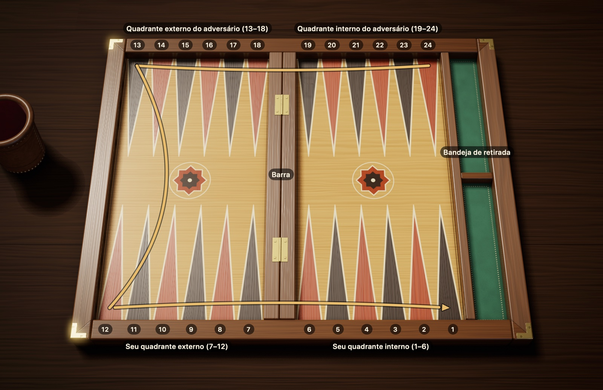
Figura 2.1O tabuleiro de gamão: 24 casas, quatro quadrantes e a barra. Você está embaixo. A seta dourada mostra o caminho das suas peças, da casa 24 até a casa 1; o adversário faz o mesmo caminho no sentido contrário.
Os quadrantes. Pense no tabuleiro como um campo dividido em quatro quadrantes, cada um com seis casas. Os dois quadrantes mais perto de você formam o seu lado; os dois do lado oposto formam o lado do adversário:
Seu quadrante interno (1–6): Onde a viagem termina. Depois que as peças chegam aqui, são retiradas do tabuleiro. Na Figura 2.1, fica no canto inferior direito.
Seu quadrante externo (7–12): A última parada antes do quadrante interno. No canto inferior esquerdo.
Quadrante externo do adversário (13–18): O meio do caminho. No canto superior esquerdo.
Quadrante interno do adversário (19–24): Onde a viagem começa. No canto superior direito.
A barra. A divisória elevada no meio do tabuleiro se chama barra. Ela tem duas funções: separa a metade esquerda da metade direita do tabuleiro e é o lugar onde as peças capturadas esperam. A barra não entra na contagem das casas: a peça que passa da casa 7 para a casa 6 anda só um passo, mesmo cruzando a barra.
A lógica dos números. Cada jogador numera as casas a partir do seu próprio quadrante interno. Por isso, cada triângulo tem dois nomes: a casa que para você é a 1, para o adversário é a 24. Para evitar confusão, todos os números deste livro estão escritos do seu ponto de vista. O Peças e Dados também pode escrever esses números nas bordas do tabuleiro: ative “Números das casas” na seção Aparência dos Ajustes.
O sentido do movimento. Suas peças andam sempre no sentido dos números decrescentes. Uma peça que parte da casa 24, no canto superior direito, vai primeiro para a esquerda ao longo da borda de cima, desce pela borda esquerda e depois avança para a direita ao longo da borda de baixo até chegar ao seu quadrante interno. As peças do adversário fazem o mesmo caminho ao contrário; por isso, os dois lados se encontram frente a frente pelo caminho.
Tabuleiro espelhado. Alguns jogadores preferem montar o quadrante interno à esquerda. Nesse caso, o tabuleiro inteiro fica espelhado, e as peças giram no sentido horário. Para as regras, não há nenhuma diferença entre as duas montagens.
2.2 A disposição inicial
Todo jogo começa na mesma posição inicial. Distribua suas 15 peças em quatro lugares, do mais distante ao mais próximo, assim:
Casa 24, 2 peças. O canto do quadrante interno do adversário. Essas duas são as suas peças mais distantes do seu quadrante interno.
Casa 13, 5 peças. O canto superior esquerdo, bem no meio do caminho.
Casa 8, 3 peças. No seu quadrante externo, a dois passos do quadrante interno.
Casa 6, 5 peças. A casa do seu quadrante interno que fica junto à barra.
2 + 5 + 3 + 5 dá 15. Como o adversário monta a mesma disposição do lado dele, as peças dele ficam nas suas casas 1, 12, 17 e 19. Se você dobrasse o tabuleiro ao meio, os dois lados ficariam exatamente um sobre o outro.
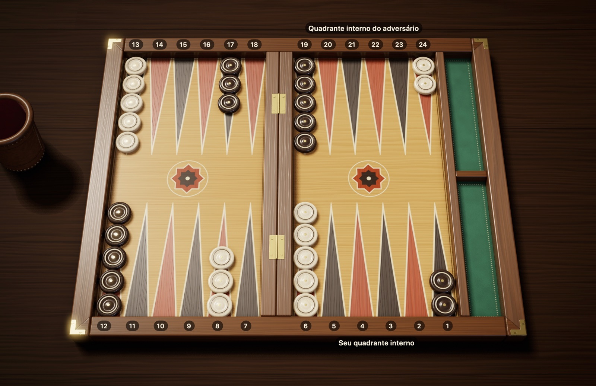
Figura 2.2A disposição inicial: 15 peças para cada jogador. Suas peças são cor de creme, e o seu quadrante interno fica no canto inferior direito; as peças do adversário são marrom-escuras, e o quadrante interno dele fica no canto superior direito. Você tem 2 peças na casa 24, 5 na 13, 3 na 8 e 5 na 6.
Um jeito fácil de lembrar: Decore “2-5-3-5” e arrume as peças começando pela casa mais recuada. Um terço das suas peças (5 peças) já está no seu quadrante interno; as outras estão em diferentes trechos do caminho. Boa parte do jogo consiste em trazer com segurança as peças que ficaram para trás.
2.3 Como o jogo começa
Os dados decidem quem faz a primeira jogada. Cada jogador rola um único dado, e quem tirar o número maior começa. Se os números forem iguais, o resultado não vale; os dois rolam de novo até saírem números diferentes.
Há duas tradições diferentes para a primeira jogada de quem venceu:
Regra internacional: Ninguém rola de novo. Os dois dados que estão na mesa, o seu e o do adversário, formam juntos a sua primeira jogada. Se você tirou 5 e o adversário 3, você joga 5-3. Como os dados do lance inicial não podem ser iguais, essa primeira jogada nunca é um duplo.
Regra turca mais difundida: Quem venceu pega os dois dados e faz um novo lance. Esse lance pode dar qualquer resultado, inclusive um duplo.
Daí em diante, os jogadores se alternam, rolando dois dados a cada vez.
Novo jogo. Nas regras internacionais, cada jogo começa do zero com o lance inicial. No tavla turco, quem abre costuma ser o vencedor do último jogo.
A etiqueta dos dados. À mesa, há alguns costumes. Os dados costumam ser agitados no copo e lançados na metade direita do tabuleiro. Um dado que cai inclinado, fica em cima de uma peça ou sai do tabuleiro não vale; o lance é repetido com os dois dados. A vez passa para você no momento em que o adversário pega os dados dele; um lance feito antes disso não vale. O que se descreve aqui é a etiqueta tradicional das mesas; os regulamentos de torneio podem ser diferentes nesses detalhes, conforme o uso de relógio, de copo de dados ou de quatro dados.
2.4 Regras turcas e regras internacionais
Nos dois conjuntos, a contagem das casas, as regras dos dados e a lógica dos pontos são as mesmas. As diferenças se concentram no início, na pontuação e em dois detalhes durante o jogo: no tavla turco mais difundido, é considerado proibido capturar e fugir no seu próprio quadrante interno e, na retirada, gastar pips quando é possível retirar uma peça. A tabela abaixo segue as regras mais difundidas; pode haver pequenas diferenças de mesa para mesa.
No Peças e Dados, você pode jogar com qualquer um dos dois conjuntos de regras. Neste livro, onde os dois conjuntos diferem, as duas regras são indicadas separadamente; basta escolher com qual delas jogar antes de começar.
Tabela 2.1 Tavla turco e regras internacionais
Aspecto
Internacional (com cubo)
Tavla turco mais difundido
Primeira jogada
Joga-se com os dados do lance inicial; não pode ser um duplo
Quem tirou o maior rola os dois dados de novo; pode sair um duplo
Quem começa o jogo seguinte
Em cada jogo há um lance inicial
Começa quem venceu o jogo anterior
Capturar e fugir no seu próprio quadrante interno
Permitido
Considerado proibido (no Peças e Dados, escolhe-se na nova partida; por padrão, é permitido)
Na retirada, avançar uma peça quando é possível retirar (“sallamak”)
Permitido
Considerado proibido (no Peças e Dados, escolhe-se na nova partida; por padrão, é permitido)
Backgammon
Existe (× 3)
Não existe; conta como gammon (× 2)
Cubo de dobra
Padrão; obrigatório nos torneios
Não existe
Regra de Crawford
Padrão nas partidas
Não existe
2.5 A tela de jogo do Peças e Dados
Quando a partida começa, aparecem ao redor do tabuleiro áreas que mostram a situação do jogo. A Figura 2.3 foi tirada durante a sua vez de jogar; o significado dos números está logo abaixo.
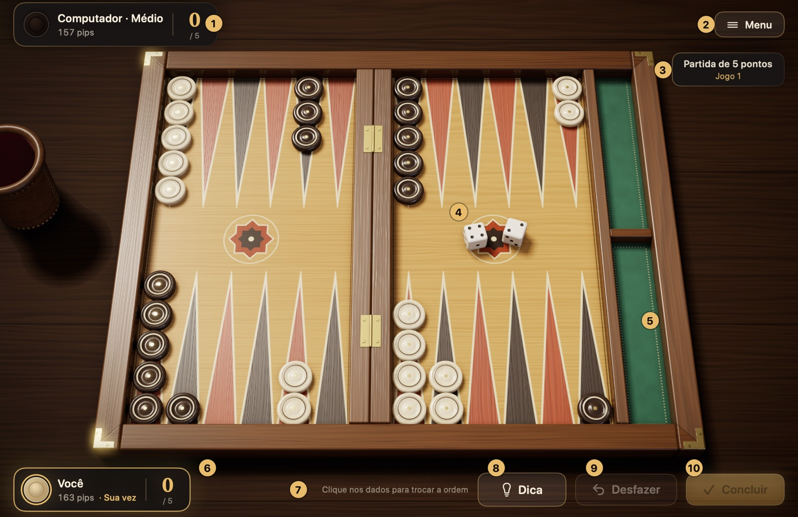
Figura 2.3A tela de jogo do Peças e Dados. O significado dos itens numerados está na lista abaixo.
Placa do adversário: Mostra o seu adversário (com o nível de dificuldade, como “Computador · Médio”), a contagem de pips e os pontos dele na partida. Enquanto o computador pensa, aparece “Pensando…”.
Menu: Pausa o jogo. O cartão que se abre traz as opções de retomar o jogo, os ajustes, o cartão “Como jogar”, o histórico de jogadas, as partidas, desistir e sair da partida. A tecla Esc faz o mesmo.
Informações da partida: Mostram até quantos pontos a partida é jogada (numa sessão, aparece “Sessão”) e em que jogo vocês estão. Nas regras internacionais, o indicador do cubo fica logo abaixo.
Dados: Os seus dados caem na metade direita do tabuleiro; os do computador, na metade esquerda.
Bandeja de retirada: O compartimento verde à direita do tabuleiro. Suas peças retiradas são arrumadas na metade de baixo; as do adversário, na metade de cima.
Sua placa: Mostra a sua contagem de pips, os seus pontos na partida e, quando é a sua vez, o aviso “Sua vez”.
Linha de dicas: Diz em poucas palavras o que você pode fazer naquele momento. Quando você tenta uma jogada inválida, o motivo também aparece aqui, por exemplo: “Esta peça não pode se mover com estes dados”.
Botões opcionais. Se você os ativar nos Ajustes, mais três botões aparecem no canto inferior direito: “Dica” marca no tabuleiro a jogada sugerida pelo motor Mestre (⌘I); “Desfazer” desfaz os passos que você jogou nesta vez (⌘Z); “Concluir”, quando a confirmação automática está desativada, encerra a jogada e passa a vez ao adversário (Return). Detalhes na seção 5.3.
Antes de começar. No painel de nova partida, você escolhe o nível de dificuldade, o conjunto de regras (tavla turco ou internacional), a duração da partida ou, nas regras internacionais, a sessão, e a cor das suas peças. Essas escolhas valem durante toda a partida; detalhes na seção 5.1.
Como funciona a sua vez? Quando chega a sua vez, os dados são rolados sozinhos e despejados de um copo de couro no tabuleiro; nas regras internacionais, no lance em que você pode dobrar, o app espera e é você quem rola, com o botão “Rolar os dados” ou a tecla Espaço. Você joga arrastando e soltando a peça, ou clicando primeiro na peça e depois na casa aonde ela vai; as peças que podem ser movidas ficam destacadas, e as casas aonde elas podem ir são marcadas com um anel. Ao jogar o último passo, a sua jogada termina e a vez passa ao adversário. Se preferir rolar você mesmo a cada vez, confirmar a jogada com “Concluir” ou desfazer passos, escolha isso nos Ajustes; detalhes na seção 5.3. De qualquer forma, o app não aceita jogadas contra as regras.
O que diz a contagem de pips? O número de pips nas placas indica quantas casas aquele jogador ainda precisa percorrer para levar todas as peças ao quadrante interno e retirá-las. Quem tem o número menor está à frente na corrida. Detalhes na seção 4.2.
Capítulo 3
As regras do jogo
Este capítulo explica, em ordem, todas as regras do jogo: o movimento das peças, os duplos, a jogada obrigatória, a captura e a entrada da peça capturada, a retirada, a pontuação e o cubo de dobra.
3.1 O movimento das peças
O jogador da vez rola dois dados e avança peças de acordo com os números tirados. Esta seção explica, passo a passo, como jogar um dado.
Como ler os dados
Os dados dizem quantas casas as peças avançam. Um dado que dá 4 significa que uma peça avança 4 casas. Ao contar, você não conta a casa onde a peça está; começa pela casa seguinte. Com um 4, a peça da casa 13 vai para a casa 9, contando 12, 11, 10, 9.
No gamão não existe marcha a ré: uma peça só pode andar em direção às casas de número menor, ou seja, aproximando-se do seu quadrante interno.
Dois dados, duas jogadas separadas
Pense nos dois dados como dois direitos separados. Quando sai 5-3, você usa esses direitos como quiser:
Você pode jogar o 5 com uma peça e o 3 com outra.
Pode dar os dois à mesma peça e levá-la 8 casas no total; tanto faz jogar primeiro o 3 ou primeiro o 5.
Quando você joga os dois dados com uma só peça, na verdade ela dá dois saltos separados e pisa por um instante na casa onde termina o primeiro salto. Essa casa intermediária também precisa ser um lugar onde a peça possa parar. Não é possível contar a soma dos dois dados de uma vez e pular a casa intermediária.
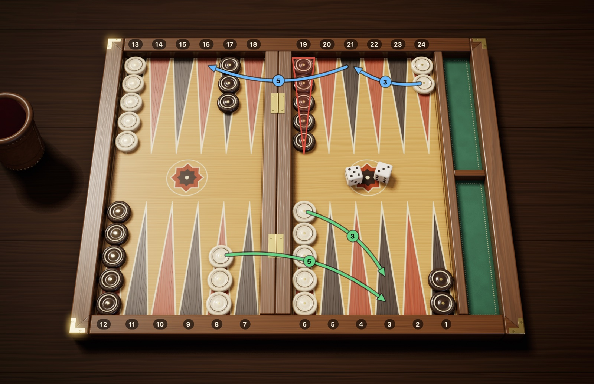
Figura 3.1Duas maneiras de jogar 5-3. Setas verdes, maneira 1: 8→3 (5) e 6→3 (3); duas peças diferentes fazem um ponto na casa 3. Setas azuis, maneira 2: 24→21 (3), depois 21→16 (5); a mesma peça anda 8 casas no total. A mesma peça não pode jogar o 5 primeiro: a casa 19, com contorno vermelho, é um ponto do adversário e não pode servir de parada intermediária.
O contrário também vale: você não pode dividir um dado em partes. Repartir um 5 entre duas peças diferentes, como 3 e 2, é contra as regras; cada dado pertence inteiro a uma única peça.
Onde a peça pode parar?
Quando você avança uma peça, o que importa é a situação da casa de chegada. Há quatro possibilidades:
Tabela 3.1 A peça pode parar na casa de chegada?
O que há na casa de chegada?
A peça pode parar?
Nenhuma peça (casa vazia)
Sim
Uma ou mais peças suas
Sim, sem limite de quantidade
Uma única peça do adversário (um blot)
Sim, e a peça do adversário é capturada
Duas ou mais peças do adversário (um ponto)
Não
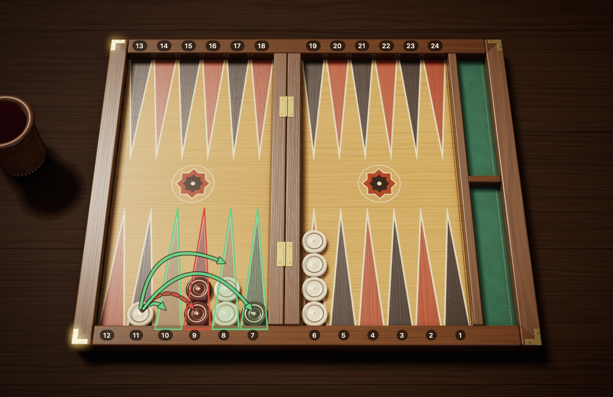
Figura 3.2Casas abertas e ponto. Para a peça da casa 11: a casa 10 está vazia, a peça pode parar ali. Na casa 8 há peças suas; você pode colocar sobre elas quantas peças quiser. Na casa 7 há uma única peça do adversário (um blot); você pode parar ali, e essa peça é capturada. Na casa 9, com contorno vermelho, há duas peças do adversário (um ponto): a seta vermelha tracejada mostra que você não pode parar ali.
Uma casa com duas ou mais peças juntas se chama ponto. Pense no ponto como um muro: o adversário não pode parar nessa casa nem usá-la como parada intermediária numa jogada de dois dados. Fazer seus próprios pontos com inteligência é a maneira mais eficaz de estreitar o caminho do adversário.
3.2 Duplos
Quando os dois dados mostram o mesmo número (de 1-1 a 6-6), você ganha um bônus: usa esse número não em duas, mas em quatro jogadas. Quem tira 5-5 faz quatro jogadas de 5 e avança 20 casas no total. Esses lances se chamam duplos.
Você pode distribuir as quatro jogadas como quiser: uma para cada uma de quatro peças, duas para cada uma de duas peças ou as quatro para uma única peça. Se você der mais de um passo com a mesma peça, cada parada intermediária por onde ela passa precisa estar aberta.
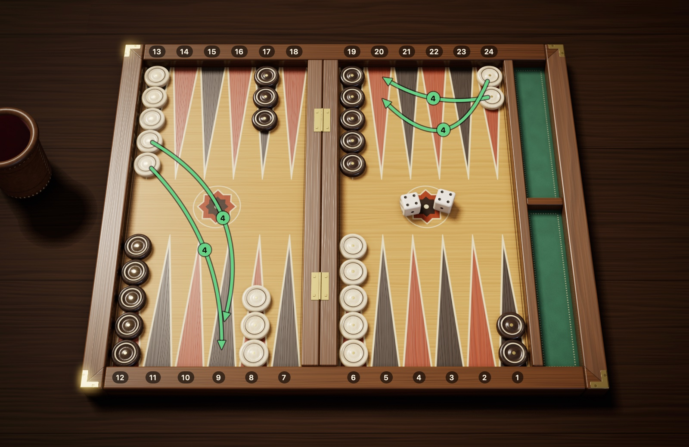
Figura 3.3Duplo: quatro jogadas com 4-4. Leve as duas peças da casa 24 para a 20 (4 + 4) e desça duas peças da 13 para a 9 (4 + 4). Cada uma das quatro jogadas é de 4 casas; você pode distribuí-las entre as peças que quiser.
3.3 Jogada obrigatória
Depois de rolar os dados, você não tem o direito de dizer “passo esta vez”. Se os dados permitirem alguma jogada, você é obrigado a fazê-la. Para descobrir quais dados você deve usar, e quantos, faça estas perguntas:
Existe uma jogada que use os dois dados? Se existir, é ela que você deve fazer. Se a primeira jogada que lhe vier à cabeça desperdiçar um dado, procure outro caminho em que os dois dados caibam.
Só um dado pode ser jogado? Então você usa o dado que pode ser jogado, e o outro se perde.
Cada dado pode ser jogado sozinho, mas os dois não cabem juntos? Nesse caso, a escolha não é sua: você usa o dado de número maior. A Figura 3.4 mostra isso.
Nenhum dado pode ser jogado? O seu lance se perde, e a vez de rolar passa para o adversário.
Saiu um duplo? Se as quatro jogadas não couberem, você é obrigado a fazer o maior número possível de jogadas permitidas; se a ordem das jogadas afetar esse número, escolha a ordem que permite mais jogadas. As que sobrarem se perdem.
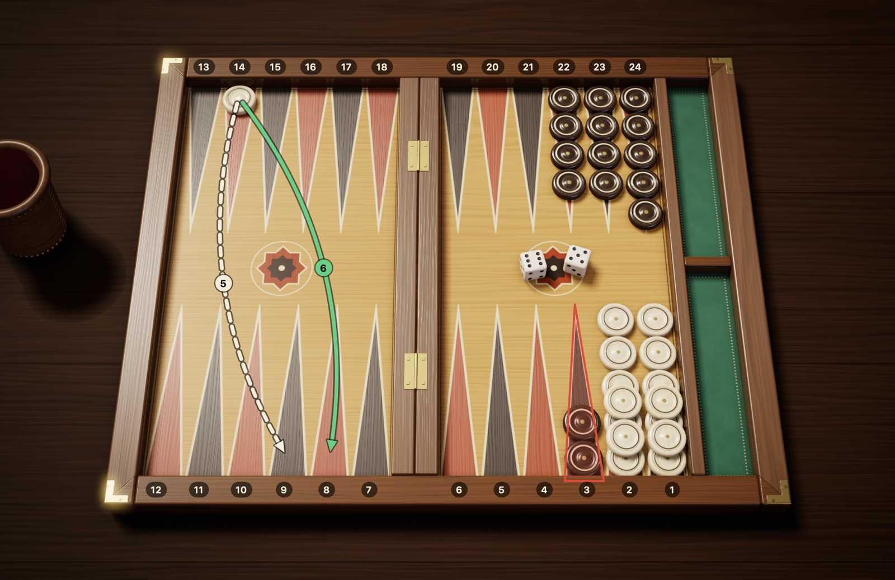
Figura 3.4Regra do dado maior: 6-5. A peça da casa 14 pode ir para a 8 com o 6 (seta verde) ou para a 9 com o 5 (seta tracejada), mas não pode jogar os dois: nos dois caminhos, o segundo passo cai na casa 3 (contorno vermelho), que é um ponto do adversário. As suas outras peças, no fundo do quadrante interno, não podem jogar nenhum dos dados. Quando cada dado pode ser jogado sozinho, mas os dois não podem ser jogados juntos, joga-se o dado maior: 14→8.
Por causa dessas regras, às vezes só resta uma jogada possível; ela se chama jogada obrigatória. No gamão digital, o próprio app verifica essas regras e não permite jogadas contra elas; num tabuleiro de verdade, prestar atenção fica por sua conta.
3.4 Blot e captura
O que torna o gamão emocionante é a captura. Primeiro, é preciso distinguir duas situações:
Blot: Uma peça que ficou sozinha numa casa. Está desprotegida; se o adversário parar sobre ela, ela perde o lugar.
Ponto: Uma casa ocupada por pelo menos duas peças da mesma cor. As peças que estão ali não podem ser tocadas.
Quando você faz uma peça parar na casa onde está um blot do adversário, você captura esse blot. A peça capturada é tirada do tabuleiro e colocada na barra, no meio. Para o adversário, é um retrocesso sério: a peça tem de recomeçar a viagem do início, e até ela voltar ao tabuleiro o adversário fica de mãos atadas.
Figura 3.5Captura: o blot é capturado com 13→9. Com o 4, 13→9: você para sobre a peça solitária do adversário e a captura; a peça capturada vai para a barra (seta tracejada). Com o 2, 11→9: você traz a segunda peça e faz um ponto na casa 9; agora você não pode mais ser capturado ali.
O que você precisa saber:
Capturar não é obrigatório. Mesmo podendo capturar um blot, você pode escolher fazer outra jogada.
Depois de capturar, você pode seguir caminho com a mesma peça. Por exemplo, com 4-2, você pode levar uma peça 4 casas e capturar, e depois avançar a mesma peça mais 2 casas. Isso se chama “capturar e fugir” (em turco, “vur kaç”). Nas regras internacionais, é permitido em qualquer parte do tabuleiro; já no tavla turco mais difundido e no portes grego, é proibido fugir com a mesma peça depois de capturar no seu próprio quadrante interno. No Peças e Dados, jogando com as regras turcas, você pode ativar essa proibição com a opção “Sem capturar e fugir”, no painel de nova partida; por padrão, ela vem desativada.
Você pode capturar mais de um blot na mesma jogada; por exemplo, uma peça pode capturar um blot na parada intermediária dos dois dados e outro na casa de chegada.
As mesmas regras valem para você. Uma peça que você deixar sozinha é capturada se os dados do adversário acertarem. Por isso, sempre que possível, tente manter suas peças em pares.
3.5 A entrada da peça capturada
Quando uma peça sua é capturada, na sua vez só há um item na sua agenda: trazer essa peça de volta ao tabuleiro. Enquanto houver uma peça sua esperando na barra, as suas outras peças ficam congeladas.
Por onde ela entra? A peça capturada recomeça a viagem do início, ou seja, pelo quadrante interno do adversário. O dado determina em que casa ela entra. Conte as casas do quadrante interno do adversário de 1 a 6, da ponta em direção à barra: se tirar 1, você entra na casa do canto do tabuleiro; se tirar 6, na casa vizinha à barra. Na sua numeração:
Tabela 3.2 A casa onde a peça capturada entra, conforme o dado
Dado
Casa de entrada
1
24
2
23
3
22
4
21
5
20
6
19
A casa indicada pelo dado pode estar vazia, ter peças suas ou ter uma única peça do adversário. Nos três casos, você entra; no último, ao entrar, você captura essa peça. Só a casa que é um ponto do adversário está fechada para você.
Figura 3.6Entrada da peça capturada: 5-2. A sua peça na barra entra no quadrante interno do adversário: com 1, na casa 24; com 2, na 23 … com 6, na 19. Com o 5, você não pode entrar: na casa 20 há um ponto do adversário (contorno vermelho). Com o 2, você entra na casa 23, que está vazia (contorno verde). Depois de entrar, você joga o 5 com outra peça ou com a peça que acabou de entrar.
A entrada, passo a passo:
Role os dados e veja a que casa do quadrante interno do adversário cada dado corresponde.
Se pelo menos uma dessas casas estiver aberta para você, coloque sua peça ali.
A entrada usa um dado. O outro dado fica livre; você o joga com a peça que quiser, inclusive com a que acabou de entrar.
Se você tiver duas peças na barra, os dois dados são usados nas entradas. Se só uma conseguir entrar, você a coloca no tabuleiro; como a segunda peça continua esperando na barra, você não pode fazer nenhuma outra jogada nesse lance.
A entrada se faz com um único dado. Digamos que você tirou 5-2; as casas 20 e 23 são pontos do adversário, e a casa 18 está vazia. Você não pode somar os dois dados, contar 7 casas e descer direto na 18. A peça precisa primeiro entrar, com um único dado, numa casa aberta do quadrante interno do adversário; aqui, as duas estão fechadas, então não há entrada.
Ficar na barra
Se nas duas casas indicadas pelos dados houver pontos do adversário, a sua peça na barra fica de fora nesse lance. Nesse lance azarado, diz-se que a peça ficou na barra (em turco, “gele”). Como nenhuma outra peça pode ser jogada enquanto houver peça na barra, você perde a vez; na próxima vez, tenta a sorte de novo.
Ficar bloqueado
A pior hipótese é que todas as seis casas do quadrante interno do adversário sejam pontos. Nesse caso, não importa o que saia nos dados, não há casa de entrada; diz-se então que você está bloqueado. Até o adversário desfazer um de seus pontos, a sua vez passa sempre sem jogada; à mesa, nem é preciso rolar os dados: a vez passa direto para o adversário. No Peças e Dados é igual: os dados não são rolados, a tela mostra “Bloqueado” e a vez passa direto para o adversário.
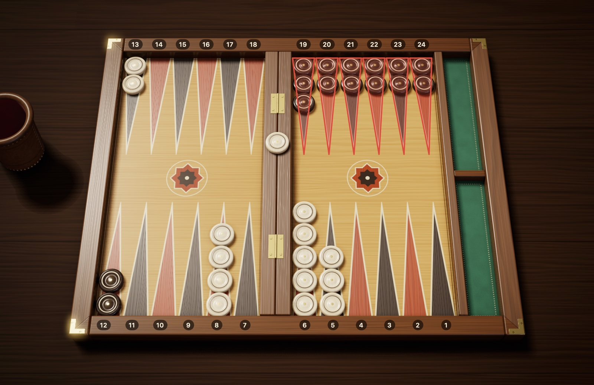
Figura 3.7Bloqueado: o quadrante interno do adversário está todo fechado. A sua peça na barra poderia entrar numa casa aberta entre 19 e 24, mas as seis casas são pontos (contornos vermelhos). Isso é estar bloqueado: até o adversário abrir um ponto, a sua vez passa sem que os dados sejam rolados.
3.6 A retirada
A reta final da corrida é tirar as peças do tabuleiro; isso se chama retirada. Há uma condição prévia: todas as suas peças que estão no tabuleiro precisam estar no seu quadrante interno, ou seja, nas casas de 1 a 6. Se uma única peça sua estiver fora dele ou esperando na barra, você não pode começar a retirada.
A regra básica
A regra é simples: o número do dado indica de que casa você retira uma peça. Se sair 6, você tira uma peça da casa 6; se sair 2, da casa 2, e a coloca no espaço na borda do tabuleiro. A peça retirada sai do jogo de vez.
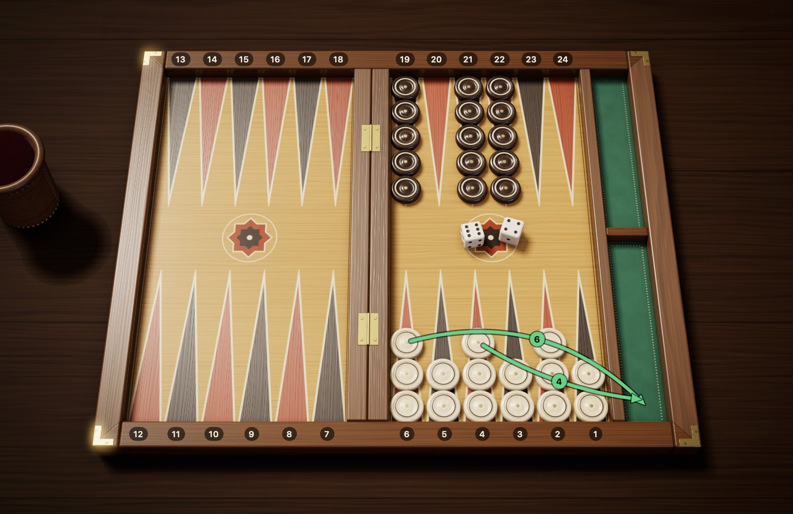
Figura 3.8Retirada: duas peças com 6-4. Com o 6, você tira uma peça da casa 6 e, com o 4, uma da casa 4, e as coloca na bandeja de retirada, à direita. A retirada só começa quando as 15 peças estão no seu quadrante interno.
Se não houver peça na casa do dado
Às vezes, a casa indicada pelo dado está vazia. Então, faça estas duas perguntas, nesta ordem:
Tenho peça numa casa de número mais alto? Se tiver, você não pode usar esse dado para retirar uma peça de uma casa mais baixa; em geral, você joga o dado avançando uma peça daquela casa mais alta.
Não tenho nenhuma peça mais acima? Então você retira uma peça da casa mais alta onde houver peça sua. Por exemplo, se a sua peça mais distante estiver na casa 4, tanto o 6 quanto o 5 retiram essa peça.
Figura 3.9Retirada: se houver peça mais acima, ela avança. Para o 5: a casa 5 está vazia, mas há peças na casa 6, mais alta; com o 5, você não pode retirar da casa 3 nem da 1. Você joga o 5 avançando uma peça da casa 6 (6→1) e, com o 1, retira uma peça da casa 1. Outro caminho: primeiro 6→5 com o 1, depois retirar essa peça da casa 5 com o 5. Na bandeja de retirada estão as 10 peças retiradas antes.
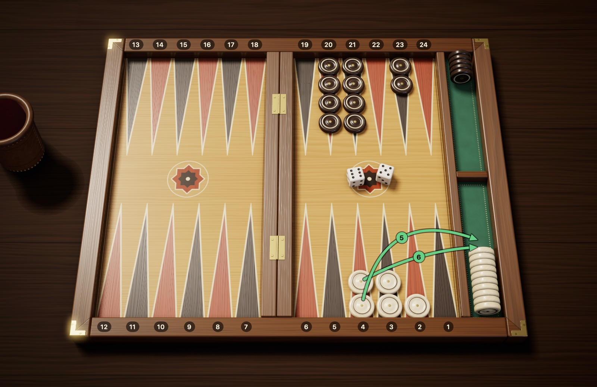
Figura 3.10Retirada: da casa mais alta. Não restam peças suas nas casas 6 e 5 nem mais acima. Nesse caso, com cada um dos dois dados, você retira uma peça da casa ocupada mais alta, ou seja, da casa 4.
Você não é obrigado a retirar
Se você tiver outra jogada permitida, não é obrigado a retirar peças. Avançar as peças dentro do quadrante interno e deixar a retirada para depois se chama, em turco, “sallamak”. Às vezes, essa é a escolha mais inteligente, para não deixar ao adversário um blot que possa ser capturado. Também é permitido avançar uma peça com um dado e retirá-la do tabuleiro com o outro. Essa liberdade é da regra internacional; no tavla turco mais difundido, é considerado proibido avançar uma peça com o dado menor, gastando pips, quando é possível retirar uma peça. No Peças e Dados, jogando com as regras turcas, você pode ativar essa proibição com a opção “Retirar sempre”, no painel de nova partida; por padrão, ela vem desativada.
Se você for capturado durante a retirada
Se o adversário tiver uma peça esperando no seu quadrante interno, um blot que você deixar durante a retirada pode ser capturado. Aí a retirada para: a peça capturada precisa primeiro entrar pelo quadrante interno do adversário, dar a volta no tabuleiro e voltar ao seu quadrante interno. Quando todas as peças que lhe restam no tabuleiro estiverem de novo reunidas no seu quadrante interno, você continua de onde parou.
3.7 O fim do jogo e os pontos
Quem retirar primeiro todas as suas peças ganha o jogo. O tamanho da vitória, porém, depende de quanto o adversário ficou para trás no momento em que o jogo termina. Quando o jogo acabar, olhe as peças do adversário; uma das três situações abaixo vai se aplicar:
Tabela 3.3 O resultado do jogo e os pontos
Resultado
Situação do adversário
Internacional, sem cubo
Internacional, com cubo
Tavla turco
Jogo simples
Retirou pelo menos uma peça
1
Valor do cubo × 1
1
Gammon
Não retirou nenhuma peça
2
Valor do cubo × 2
2
Backgammon
Não retirou nenhuma peça e ainda tem peça na barra ou no seu quadrante interno
3
Valor do cubo × 3
2 (conta como gammon)
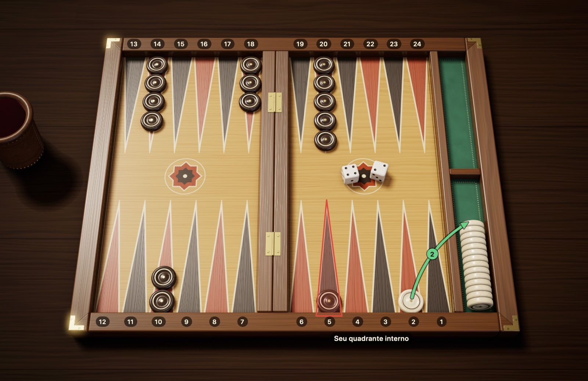
Figura 3.11Backgammon: o adversário está zerado e tem peça no seu quadrante interno. Com o 2, você retirou sua última peça e ganhou o jogo. O adversário não conseguiu retirar nenhuma peça: isso, por si só, já é um gammon (2 pontos). Além disso, ele ainda tem uma peça na casa 5, com contorno vermelho, ou seja, no seu quadrante interno: é backgammon (3 pontos).
Exemplos:
Se, quando você retira sua última peça, o adversário já retirou 4 peças, você ganha um jogo simples: 1 ponto.
Se o adversário não conseguiu retirar nem uma peça, mas não tem mais peças na barra nem no seu quadrante interno, você faz um gammon: 2 pontos.
Se o adversário não conseguiu retirar nenhuma peça e ainda tem uma peça na barra ou no seu quadrante interno, você faz um backgammon: 3 pontos.
Com o cubo de dobra em 8, quem faz um gammon ganha 8 × 2 = 16 pontos.
No tavla turco, o backgammon não é um resultado à parte: essa situação também conta como gammon e vale 2 pontos. Antes de jogar, deixe claro com qual conjunto de regras vocês vão jogar.
Os pontos da partida. Na maioria das vezes, o gamão não se joga num único jogo, e sim até um certo número de pontos; nos torneios, em geral 5, 7 ou 11 pontos. No fim de cada jogo, os pontos são anotados no placar do vencedor; quando se joga com o cubo, eles são multiplicados pelo valor do cubo. Quem chegar primeiro aos pontos combinados vence a partida. Por isso, fazer um gammon ou escapar de um pode mudar o resultado da partida.
3.8 O cubo de dobra
O cubo de dobra é um cubo com números que nunca é lançado. Suas faces trazem 2, 4, 8, 16, 32 e 64, e ele só mostra o valor que o jogo tem naquele momento. Nas mesas de bairro da Turquia, quase não aparece; em compensação, é indispensável nos torneios internacionais e nas partidas on-line. O Peças e Dados também tem o cubo de dobra; ele é usado quando você escolhe as regras internacionais no início; a seção 5.4 explica como dobrar e como responder a uma oferta. Se você vai jogar sem cubo, pode pular esta seção.
A posição e o significado do cubo
No começo do jogo, o cubo fica no meio, entre os dois jogadores, com o 64 na face de cima. Como o cubo não tem 1, aqui o 64 significa “ainda não houve dobra, o jogo vale 1 ponto”. Enquanto o cubo está no centro, qualquer um dos dois pode fazer a primeira oferta. Depois que uma oferta é aceita, o lado em que o cubo está mostra quem tem o direito de fazer a próxima oferta. No Peças e Dados, o cubo aparece abaixo das informações da partida, no canto superior direito: no início, aparece “1 Cubo no centro”; depois que uma dobra é aceita, aparece o valor do cubo com “Cubo com você” ou “Cubo com o adversário”.
Como dobrar, passo a passo
Quando? A oferta só pode ser feita na sua vez e antes de tocar nos dados. Depois que os dados foram rolados, a oportunidade daquele lance já passou.
Como? Se você acha que sua situação é boa, vira o cubo para o valor seguinte (na primeira vez, para 2), oferece-o ao adversário e diz “dobro”. O sentido é: “Vamos jogar este jogo valendo o dobro?”
O que o adversário pode fazer?
Aceitar: Ele coloca o cubo do lado dele, com o valor dobrado (2, na primeira dobra) virado para cima; o jogo continua da mesma posição, agora valendo o dobro.
Recusar: Ele entrega o jogo naquele momento. Os pontos que perde são o valor que o cubo tinha antes da oferta; na primeira oferta, 1 ponto.
De quem é a próxima oferta? O cubo passa para o jogador que aceitou a oferta, e só ele tem o direito à próxima dobra. Por isso, as ofertas sempre se alternam entre os dois; o mesmo jogador não pode dobrar duas vezes seguidas.
Exemplo
Digamos que, no começo do jogo, o adversário dobrou e você aceitou; o cubo está em 2, do seu lado. Alguns lances depois, quando o jogo pende para o seu lado, você vira o cubo para 4 e o oferece ao adversário. Se ele recusar, você ganha o jogo e 2 pontos. Se ele aceitar, o cubo passa para o lado dele em 4, e os pontos ganhos no fim do jogo se leem na linha “4” da Tabela 3.4.
Tabela 3.4 Pontos ganhos conforme o valor do cubo
Cubo
Jogo simples
Gammon
Backgammon
No centro (1)
1
2
3
2
2
4
6
4
4
8
12
8
8
16
24
O que você precisa saber:
As dobras não têm teto; depois de 64, o valor continua dobrando: 128, 256 e assim por diante. Mesmo assim, é muito raro chegar a valores tão altos.
Se o direito de dobrar é seu, ter uma peça esperando na barra não impede você de fazer a oferta. No Peças e Dados, a única exceção é quando você está bloqueado: com o quadrante interno do adversário todo fechado, a vez passa sem que os dados sejam rolados, e nesse lance também não se pode dobrar.
Decidir se dobra ou não, se aceita ou não, é uma das habilidades mais importantes do jogo; os critérios estão no próximo tópico.
Decisões de dobra
Usar bem o cubo é uma das habilidades mais sutis do gamão. O que vem abaixo não são regras rígidas, mas critérios sólidos para começar.
Para aceitar: Quando receber uma oferta, pergunte-se, mais ou menos: “Se eu jogasse este jogo quatro vezes, ganharia pelo menos uma?” Se as suas chances de vitória estiverem em torno de um quarto ou acima disso, aceitar costuma ser o certo. Afinal, se você recusar, a derrota é certa; se aceitar, você ainda pode virar o jogo e, depois, usar o cubo a seu favor. Esse critério de 25% vem do modelo mais simples, que não leva em conta o gammon nem a redobra: o valor de ficar com o cubo baixa um pouco esse limite, o risco de gammon o eleva, e o placar da partida pode mexer nele para os dois lados.
Para oferecer: Se a sua situação estiver claramente melhor, mas o jogo ainda não estiver resolvido, é hora de dobrar. Evite três erros:
Dobrar cedo demais: Uma dobra feita com pouca vantagem dá ao adversário um aceite tranquilo e, de quebra, a posse do cubo.
Dobrar tarde demais: Sua situação melhora tanto que o adversário já não aceita e entrega o jogo por 1 ponto; se você tivesse dobrado um lance antes, ele teria aceitado, e você estaria jogando valendo o dobro. Isso se chama “perder o mercado”.
Posição boa demais para dobrar: A posição pode ser tão forte que o adversário certamente recusaria a dobra. Se o ganho que você espera do gammon, continuando a jogar sem usar o cubo, for maior que o 1 ponto que você receberia com a recusa do adversário, a posição é “boa demais para dobrar”. Esse critério não vale nas sessões em que se aplica a regra Jacoby; ali, se não houve dobra, o gammon vale só 1 ponto, então é preciso virar o cubo. Nas partidas por pontos, o placar também muda o valor do gammon.
A regra 8-9-12 na corrida pura. Se o contato acabou e o jogo virou uma pura corrida de pips, quem decide é a contagem de pips. Calcule a diferença em porcentagem, dividindo-a pela contagem de pips de quem está à frente; se você estiver atrás, divida pela contagem do adversário, ou seja, do líder:
Tabela 3.5 A regra 8-9-12 na corrida pura
Diferença de pips (em relação à contagem do líder)
Decisão
8% à frente
Pense em fazer a primeira dobra
9% à frente
Se o cubo for seu, redobre
Até 12% atrás
Se receber uma oferta, aceite
Mais de 12% atrás
Recuse
Exemplo: se a sua contagem é 80 e a do adversário é 88, você está 8 pips à frente; isso é 10% de 80, a contagem do líder, e você está na zona de dobra. Como a regra se baseia na contagem bruta de pips, seja um pouco mais cauteloso se tiver empilhado suas peças nas casas baixas. A regra vale quando é a sua vez, quando o contato acabou por completo e em corridas médias ou longas; quando o jogo se resume às últimas peças, em vez da porcentagem é preciso olhar onde as peças estão e, numa partida por pontos, avaliar também o placar.
Regras de partida e de sessão
Regra de Crawford: Quando, numa partida, um dos jogadores fica pela primeira vez a um ponto do objetivo (4 pontos numa partida de 5), o cubo não é usado no jogo imediatamente seguinte, e só nele; esse é o jogo Crawford. Quando esse jogo termina, o cubo volta a ser usado e fica liberado até o fim da partida. A regra só se aplica uma vez por partida; se depois o outro jogador também chegar à mesma pontuação, não há um novo jogo Crawford. O objetivo é impedir que o jogador que está atrás dobre logo em cada jogo e tire toda a diferença num único jogo. A regra leva o nome do jogador norte-americano John R. Crawford.
Regras opcionais (aparecem nas sessões e não são usadas nas partidas):
Dobras automáticas: Se os dados do lance inicial saírem iguais, o cubo vai sozinho para 2 e fica no centro. Em geral, isso se limita a uma vez por jogo.
Beaver: O jogador que recebe a dobra pode, ao aceitar, dobrar o cubo mais uma vez na hora, e o cubo continua com ele. Quem dobrou pode aceitar o beaver ou recusar; se recusar, perde o valor da dobra que fez, que na primeira dobra é de 2 pontos.
Raccoon: O jogador que recebe um beaver, ou seja, quem fez a primeira dobra, pode dobrar o valor mais uma vez na hora. O cubo continua com o jogador que aceitou a dobra; o outro lado aceita o novo valor ou entrega o jogo pelo valor daquele momento. Assim como o beaver, só aparece nas sessões.
Regra Jacoby: Se não houve nenhuma dobra no jogo, o gammon e o backgammon valem só 1 ponto. Isso incentiva quem está à frente a dobrar em vez de correr atrás do gammon.
Capítulo 4
Como jogar melhor
Depois de aprender as regras, as bases para jogar bem: um jogo de exemplo, a contagem de pips, as jogadas de abertura, os planos de jogo, o risco de deixar um blot e a estratégia de retirada.
4.1 Um jogo de exemplo: os cinco primeiros lances
Para ver as regras funcionando juntas, vamos acompanhar passo a passo os cinco primeiros lances de um jogo. O tabuleiro está na disposição inicial, e jogamos com as regras internacionais. Os números das casas são dados do seu ponto de vista.
O lance inicial. Você tira 3, e o adversário, 1. Quem tirou mais foi você; sua primeira jogada é com esse 3-1. Com o 3, você joga 8→5 e, com o 1, 6→5, fazendo um ponto na casa 5. Essa é uma das jogadas mais recomendadas na abertura.
O adversário tira 6-4. Ele corre com uma de suas peças de trás: a peça que está na sua casa 1 vai para a 7 com o 6 e para a 11 com o 4. A peça fica sozinha na 11, ou seja, é um blot.
Você tira 4-2. Com o 2, joga 13→11 e captura o blot do adversário; a peça dele vai para a barra. Com o 4, joga 24→20.
O adversário tira 5-5. Como ele tem uma peça na barra, primeiro precisa fazê-la entrar. Com o 5, a casa de entrada seria a sua casa 5, mas ali há um ponto seu. Como as quatro jogadas do duplo são todas de 5, a peça do adversário fica na barra; nesse lance, ele não pode mover nenhuma peça.
Você tira 6-5. Leva a peça que ficou na casa 24 para a 18 com o 6 e para a 13 com o 5. Como a 18 está vazia, a parada intermediária está livre; na 13 já há peças suas.
Ao fim dos cinco lances, o tabuleiro fica como na Figura 4.1:
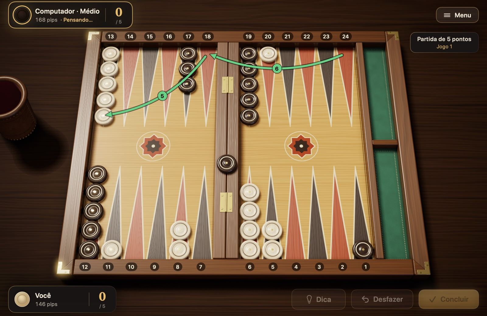
Figura 4.1Jogo de exemplo: a posição depois do quinto lance. Último lance: com 6-5, a peça da casa 24 correu primeiro para a 18 e depois para a 13 (setas verdes). Uma peça do adversário espera na barra; o seu ponto na casa 5 dificulta a entrada dela. Seus blots estão nas casas 20 e 11. A contagem de pips nas placas dos jogadores: você 146, o adversário 168; é a vez do adversário.
Nesses cinco lances, foram usadas todas estas regras: o movimento, a formação de pontos, a captura, a entrada e a peça que fica na barra. O jogo continua assim até que os dois lados levem suas peças para o quadrante interno e as retirem.
4.2 A contagem de pips
Como o gamão é uma corrida, em qualquer momento do jogo a pergunta “quem está mais perto da chegada?” é muito importante. A medida disso é a contagem de pips: o total de casas que um jogador ainda precisa percorrer para levar todas as peças ao quadrante interno e retirá-las do tabuleiro.
Como se calcula? A distância de cada peça é o número da casa onde ela está, na sua própria numeração. Uma peça na casa 6 está a 6 pips; uma na casa 13, a 13 pips. A peça na barra está na posição mais distante e conta como 25. Some as distâncias de todas as peças.
Por exemplo, no início: 2 × 24 + 5 × 13 + 3 × 8 + 5 × 6 = 48 + 65 + 24 + 30 = 167 pips. Os dois jogadores começam o jogo com 167. A cada jogada, a sua contagem diminui exatamente o que a peça andou de fato (na retirada, quando você usa um dado maior para retirar uma peça da casa mais alta, a redução é o número da casa onde a peça estava, e não o valor do dado); já uma peça capturada volta para a barra e aumenta de repente a contagem do seu dono.
No Peças e Dados, você não precisa fazer essa conta. A contagem de pips nas placas dos jogadores se atualiza sozinha depois de cada jogada. No jogo de exemplo da seção 4.1, você está com 146 pips e o adversário com 168; ou seja, você tem uma vantagem de cerca de três lances.
Para que serve essa informação?
Se você está à frente, evitar o contato e levar depressa as peças para o quadrante interno costuma ser um bom plano.
Se está atrás, é difícil ganhar só na corrida; você fica à espreita de uma chance de capturar peças do adversário ou de bloquear o caminho dele.
Se você joga com o cubo, numa corrida pura as decisões de dobra dependem da diferença de pips. O que fazer em cada diferença é explicado no tópico “Decisões de dobra”, na seção 3.8.
4.3 As jogadas de abertura
Como a primeira jogada é sempre feita a partir da mesma posição, as boas jogadas para cada lance foram em grande parte definidas por análises de computador. A Tabela 4.1 traz as jogadas amplamente aceitas para jogos com as regras internacionais, sem levar em conta o placar de uma partida; numa partida, o placar pode mudar algumas escolhas. A notação é “de/para”: 8/5 significa da casa 8 para a casa 5; (2) indica que a mesma jogada é feita com duas peças.
Tabela 4.1 Jogadas de abertura nas regras internacionais
Dados
Jogada recomendada
Alternativa razoável
Objetivo
3-1
8/5 6/5
—
Ponto na casa 5
4-2
8/4 6/4
—
Ponto na casa 4
6-1
13/7 8/7
—
Ponto na casa 7, fechando a frente do quadrante interno
5-3
8/3 6/3
—
Ponto na casa 3
6-5
24/13
—
Salvar uma das peças de trás numa só jogada
6-4
24/14
24/18 13/9 ou 8/2 6/2
As três jogadas têm valor quase igual
6-3
24/18 13/10
24/15
Desenvolver-se tanto atrás quanto no meio
6-2
24/18 13/11
24/16
Desenvolver-se tanto atrás quanto no meio
5-4
24/20 13/8
13/9 13/8
Candidata a âncora atrás, peça nova no meio
5-2
13/8 24/22
13/8 13/11
Desenvolvimento seguro pelo meio
5-1
13/8 24/23
13/8 6/5
Peça segura, separar as peças de trás
4-3
13/10 13/9
24/21 13/9 ou 24/20 13/10
Trazer peças para construir o quadrante interno
4-1
24/23 13/9
13/9 6/5
Separar as peças de trás, peça nova no meio
3-2
24/21 13/11
13/11 13/10
Separar as peças de trás, peça nova no meio
2-1
13/11 6/5
13/11 24/23
Arriscar uma peça na casa 5 ou separar as peças de trás
As jogadas da Tabela 4.1 se baseiam nas análises de computador do site Backgammon Galore. As da coluna “Alternativa razoável” também são boas jogadas; nas análises, a diferença entre elas é muito pequena, e você pode escolher conforme o seu estilo de jogo. Iniciantes que querem jogar com segurança podem preferir 13/11 24/23 no 2-1 e, no 6-4, 8/2 6/2, que não deixa nenhum blot. Para comparar: o blot deixado por 24/14 é capturado com 11 dos 36 lances possíveis; já dos dois blots deixados por 24/18 13/9, pelo menos um é capturado com 27 dos 36.
Na regra internacional, a primeira jogada nunca é um duplo. Se você joga com a regra turca, o primeiro lance também pode ser um duplo; nesse caso, estas jogadas são um bom começo:
Tabela 4.2 Primeiro lance duplo na regra turca
Duplo
Jogada recomendada
6-6
24/18(2) 13/7(2)
5-5
13/3(2)
4-4
24/20(2) 13/9(2)
3-3
8/5(2) 6/3(2)
2-2
13/11(2) 6/4(2)
1-1
8/7(2) 6/5(2)
Você não precisa decorar essas tabelas. Mas vale a pena enxergar a lógica comum a todas elas: se possível, faça um novo ponto no seu quadrante interno ou logo à frente dele; se não der, movimente as peças de trás, e não deixe peças sozinhas em lugares onde sejam fáceis de capturar.
4.4 Os planos de jogo básicos
A maioria dos jogos de gamão acaba seguindo um de poucos planos conhecidos. A diferença de pips e os pontos no tabuleiro determinam qual deles lhe convém. Também é normal passar de um plano a outro conforme o jogo avança.
Corrida: Se você está à frente na contagem de pips, corta o contato com o adversário e leva depressa todas as suas peças para o quadrante interno. Quando o contato acaba, o jogo vira uma pura corrida de dados, e quem está à frente geralmente vence.
Jogo de contenção (âncora): Você mantém um ponto com duas peças no quadrante interno do adversário. Essa “âncora” protege você de ser capturado e lhe dá a chance de capturar se o adversário deixar um blot ao levar as peças para o quadrante interno dele. Se você está atrás, é o plano mais sólido.
Jogo de prime: Fazendo pontos lado a lado, você ergue uma barreira na frente das peças de trás do adversário. Com seis pontos seguidos, a peça que está atrás não passa com nenhum dado; você vai deslizando o prime devagar em direção ao seu quadrante interno e encurrala o adversário.
Blitz: Você captura várias vezes seguidas as peças do adversário que entram no seu quadrante interno e fecha o seu quadrante depressa. Um blitz bem-sucedido deixa o adversário bloqueado e muitas vezes rende um gammon; mas, se fracassar, deixa para trás blots seus.
Back game: Quando está muito atrás, você mantém duas âncoras no quadrante interno do adversário e espera que ele deixe um blot enquanto reúne as peças no quadrante dele. É um plano de salvamento, não um começo a ser escolhido de propósito.
Não são regras mecânicas, e sim intuições. O timing, a qualidade dos seus pontos, a situação das peças de trás e o risco de gammon podem exigir o contrário do que a diferença de pips indica: abandonar logo um prime forte só porque se tem uma grande vantagem de pips é um erro, assim como encerrar um blitz que vai bem só porque se está atrás.
4.5 O risco de deixar um blot
Às vezes, não há como evitar deixar uma peça sozinha. Aí a pergunta é: onde deixá-la para que corra o menor risco de ser capturada? A resposta depende de a quantas casas o blot está da peça do adversário que poderia capturá-lo.
Figura 4.2A probabilidade de o blot ser capturado, conforme a distância. O blot a 6 casas de distância é o que corre mais perigo; a partir de 7, o risco cai de repente. As barras mostram com quantos dos 36 lances possíveis do adversário o seu blot é capturado (se não houver pontos no caminho).
A distância mais perigosa é 6. Um blot a 6 casas de distância é capturado com 17 dos 36 lances, ou seja, em quase um de cada dois lances.
A partir de 7, é muito mais seguro. Para capturar uma peça a essa distância, os dois dados precisam se combinar; o risco cai de valores perto da metade para um sexto ou menos.
Perto nem sempre é seguro. Mesmo um blot a 1 casa de distância é capturado com 11 dos 36 lances.
Esses números valem para o caso em que há uma única peça adversária, nenhum ponto no caminho e nenhuma peça do adversário esperando na barra. Se mais de uma peça adversária mira o mesmo blot, o risco aumenta; se os seus pontos fecham as paradas intermediárias, diminui. Por causa dos duplos, distâncias como 12, 16, 20 e 24 também podem ser alcançadas por caminhos especiais; o risco não diminui de forma regular com a distância.
4.6 A estratégia de retirada
As regras da retirada são simples, mas retirar bem é uma habilidade. A partir da mesma posição, dois jogadores podem, com decisões diferentes, criar uma diferença de um ou dois lances; numa corrida apertada, essa diferença decide o jogo.
Ao trazer as peças para o quadrante interno
Leve as peças para as casas altas do quadrante interno. Ao entrar no quadrante interno, tente colocar as peças nas casas 6, 5 e 4. Peças amontoadas cedo nas casas 1 e 2 fazem você desperdiçar dados altos mais adiante.
Distribua de forma equilibrada. Com as peças espalhadas pelas casas, você consegue retirar uma peça qualquer que seja o dado. Já as casas vazias significam que, quando sair aquele número, você não vai conseguir retirar peça.
Não entre fundo sem necessidade. Levar até a casa 1 uma peça que acabou de entrar no quadrante interno, pensando “vou avançar só mais um pouco”, faz um dado alto como o 6 render só 1 pip quando a retirada começar.
Sem contato
Se as peças do adversário já passaram por todas as suas, não há mais risco de captura, e o jogo é uma corrida pura. Nesse caso, o princípio básico é: a cada lance, retire o maior número possível de peças. As análises de computador mostram que essa é a melhor jogada em quase todas as posições; só em distribuições muito desequilibradas pode ser melhor ajeitar uma peça lá dentro, para desperdiçar menos nos próximos lances. Se não puder retirar uma peça, use o dado para ocupar casas vazias. Se tirar um duplo, não perca a chance de retirar quatro peças de uma vez.
Com contato
Se uma ou duas peças do adversário ainda estão no seu quadrante interno, a retirada não é uma corrida de velocidade, e sim um jogo de segurança. Um único blot dá ao adversário a chance de virar o jogo.
Esvazie de trás para a frente. Primeiro, limpe as casas mais altas. As peças que esperam perto da peça do adversário são as mais perigosas.
Deixe números pares de peças. Se você mantiver duas ou quatro peças em cada casa, poderá tirá-las de duas em duas com os dois dados e esvaziar a casa sem deixar nenhuma peça sozinha. Numa casa com um número ímpar de peças, muitas vezes sobra uma peça sozinha.
Tente fechar os buracos. Casas vazias no seu quadrante interno podem obrigar você a deixar um blot nos próximos lances.
Se preciso, avance em vez de retirar. Se retirar uma peça for deixar um blot, muitas vezes é melhor mover as peças dentro do quadrante interno e ficar em segurança.
Os mesmos princípios valem se você começou a retirada com uma peça do adversário capturada e esperando na barra: a qualquer momento ela pode entrar e capturar um blot seu; por isso, faça a retirada mantendo o seu quadrante interno o mais fechado possível.
4.7 Dicas para iniciantes
Depois de aprender as regras, estes princípios simples vão ajudar nos seus primeiros jogos:
Se for deixar um blot, escolha o lugar. Às vezes, uma peça sozinha é inevitável; então deixe-a onde o adversário possa capturá-la com o menor número de lances, de preferência a 7 casas ou mais.
Valorize as casas do seu quadrante interno. Cada ponto que você faz no quadrante interno dificulta a volta das peças do adversário que você captura. As casas 5 e 4 são as mais valiosas.
Não empilhe as peças num só lugar. Juntar cinco ou seis peças numa casa significa deixá-las esperando sem nenhuma utilidade. Tire peças das pilhas e use-as para fazer novos pontos.
Mantenha a flexibilidade. Com peças a distâncias diferentes, a maioria dos próximos lances será útil. Evite uma disposição que dependa sempre dos mesmos números.
Pense também no lugar do adversário. Antes de fazer sua jogada, veja rapidamente o que ele pode fazer no próximo lance.
Não tenha pressa. Para cada lance, compare algumas opções. No Peças e Dados, por padrão, um passo jogado não pode ser desfeito. Se quiser testar jogadas diferentes, ative “Mostrar o botão Desfazer” e desative “Confirmar as jogadas automaticamente” nos Ajustes; detalhes na seção 5.3.
Aprenda com os jogos que perde. No gamão, a sorte pode decidir um jogo; mas, se você comete o mesmo erro várias vezes, o problema não está nos dados.
Capítulo 5
Como usar o Peças e Dados
Este capítulo responde, passo a passo, à pergunta “como se faz cada coisa no Peças e Dados?”: da criação de uma partida aos ajustes e às ferramentas de treino. Os nomes de botões e menus estão escritos como aparecem no app.
5.1 Começar uma nova partida
No menu principal, clique em “Nova partida” (⌘N). O painel que se abre tem cinco escolhas; a partida começa com “Começar”.
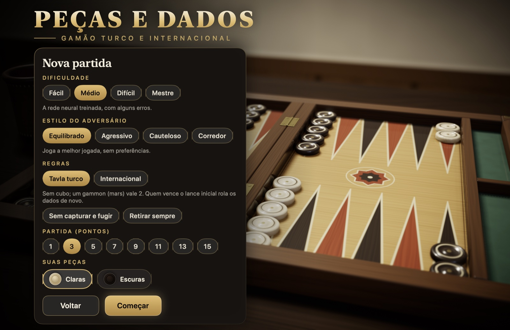
Figura 5.1Painel de nova partida: dificuldade, estilo do adversário, regras, partida ou sessão e cor das peças.
Dificuldade: “Fácil” erra com frequência e é ideal para aprender. “Médio” é uma rede neural treinada que erra de vez em quando. “Difícil” é uma rede neural treinada com milhões de jogos. “Mestre”, além disso, calcula todas as possibilidades dos dados.
Estilo do adversário: “Equilibrado”, “Agressivo”, “Cauteloso” ou “Corredor”. O adversário equilibrado faz a melhor jogada. Os outros três escolhem, segundo a própria tendência, entre jogadas que diferem muito pouco: o agressivo prefere capturar e fechar pontos, o cauteloso prefere não deixar peça exposta, e o corredor prefere escapar com as peças de trás; o preço disso é pequeno. O estilo só afeta a escolha de jogadas do computador; a dica, o Treinador e a análise sempre se baseiam na melhor jogada. O estilo escolhido é salvo com a partida.
Regras: “Tavla turco” ou “Internacional”. As diferenças estão na Tabela 2.1. Com o tavla turco selecionado, aparecem embaixo duas regras tradicionais: “Sem capturar e fugir” e “Retirar sempre”. As duas vêm desativadas por padrão. As regras escolhidas não mudam durante a partida.
Partida ou sessão: Em “Partida (pontos)”, você escolhe até quantos pontos a partida será jogada: 1, 3, 5, 7, 9, 11, 13 ou 15. Nas regras internacionais, há também a aba “Sessão” ao lado: numa sessão não há duração de partida, os pontos de cada jogo são anotados e você encerra a sessão quando quiser. Na sessão, aparecem também as opções “Regra Jacoby”, “Beaver”, “Raccoon” e “Dobras automáticas”; o que elas são está no tópico “Regras de partida e de sessão”, na seção 3.8. O tavla turco não tem sessão.
Suas peças: “Claras” ou “Escuras”. Seja qual for a escolha, as suas peças ficam sempre embaixo. A cor do ícone vem do estilo de peças escolhido em Ajustes: em “Laca vermelha e preta”, a peça clara é vermelha.
Se você começar uma nova partida enquanto outra está em andamento, o app pergunta antes. A partida em andamento fica salva; você pode voltar a ela pelo cartão “Partidas”. O cartão de confirmação também traz um resumo da partida que vai começar. Com ⌘N aparece a mesma confirmação, inclusive entre um jogo e outro.
5.2 Rolar os dados e mover as peças
Quando chega a sua vez, os dados são rolados sozinhos: são despejados do copo de couro na metade direita do tabuleiro. Nas regras internacionais, se você tiver o direito de dobrar, o app espera; o botão “Rolar os dados” aparece na metade direita do tabuleiro e, logo abaixo, o botão “Dobrar”. Você rola clicando no botão ou nos dados, ou apertando a tecla Espaço. Se “Rolar automaticamente” estiver desativada nos Ajustes, o botão “Rolar os dados” aparece sempre que chega a sua vez.
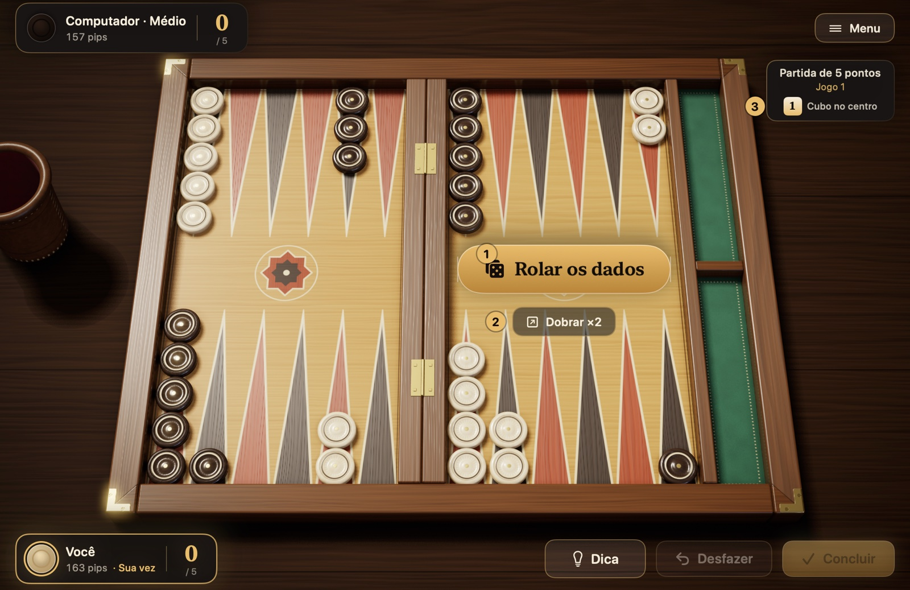
Figura 5.2A vez de rolar, quando você tem o direito de dobrar. 1 botão “Rolar os dados”, 2 botão “Dobrar”, 3 indicador do cubo.
Depois que os dados são rolados, as peças que você pode mover ficam destacadas. Você move uma peça de uma destas maneiras:
Clicando: Clique primeiro na peça; as casas aonde ela pode ir são marcadas com um anel verde. Depois, clique no destino. Um destino onde você captura um blot do adversário é marcado com uma mira vermelha.
Arrastando: Pegue a peça e solte-a no destino.
Rápido: Um clique duplo move a peça com o dado maior; um clique com o botão direito, com o dado menor.
Pelo teclado: Tab percorre as peças que podem ser movidas, as setas escolhem o destino, e Return faz a jogada.
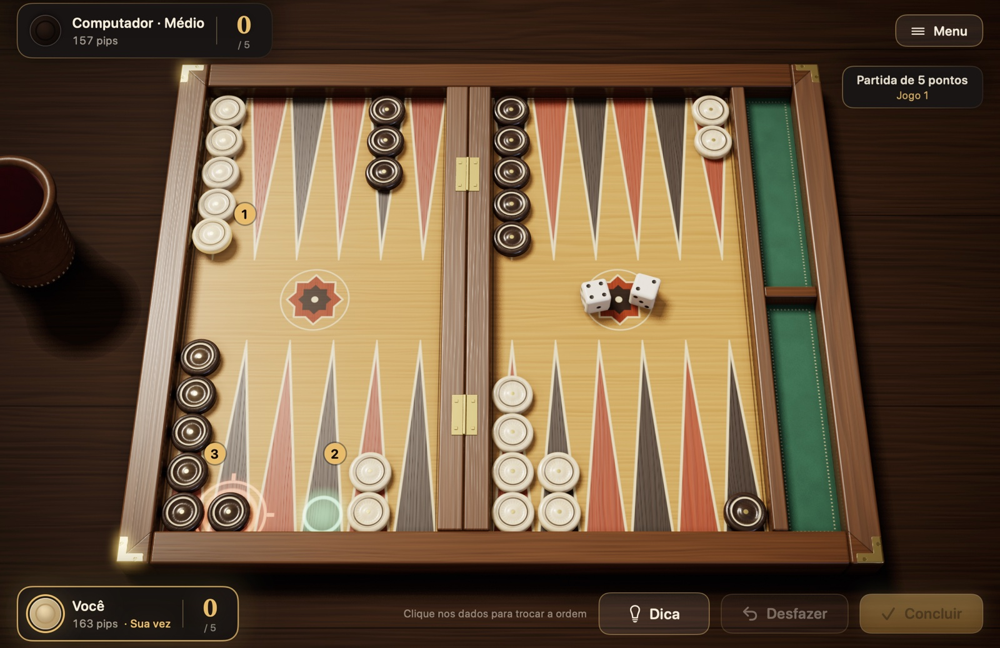
Figura 5.3Jogada. Saiu 4-2, e a peça da casa 13 foi selecionada. 1 peça selecionada, 2 casa vazia aonde ela pode ir com o 4 (anel verde), 3 casa onde ela pode capturar um blot do adversário com o 2 (mira vermelha).
Para mudar qual dado é jogado primeiro, clique nos dados no tabuleiro. Ao jogar o último passo, a sua jogada termina sozinha e a vez passa ao adversário; se você só tiver uma jogada permitida, o app a faz por você. Se preferir confirmar a jogada você mesmo ou desfazer passos, desative “Confirmar as jogadas automaticamente” e ative “Mostrar o botão Desfazer” nos Ajustes: então é “Concluir” (Return) que encerra a jogada e, até lá, “Desfazer” (⌘Z) desfaz, um por um, os passos que você jogou. Se você não tiver nenhuma jogada, o app diz “Nenhuma jogada possível!” e a vez passa para o adversário. Se você tiver uma peça na barra e o quadrante interno do adversário estiver todo fechado, nem se rolam os dados: a tela mostra “Bloqueado” e a vez passa direto.
5.3 Dicas e facilidades de jogo
O botão “Dica” fica oculto por padrão; ele aparece no canto inferior direito quando você ativa “Mostrar o botão Dica” nos Ajustes. O botão (⌘I) marca no tabuleiro a jogada que o motor Mestre sugere para aquele lance; a marca some quando você joga o primeiro passo. Nas regras internacionais, ele também dá sugestões para a decisão de dobra: antes de rolar, “Sugestão: dobrar” ou “Sugestão: não dobrar, rolar os dados”; diante de uma dobra do computador, “Sugestão: aceitar” ou “Sugestão: recusar”. As dicas que você usa são registradas no resumo do fim do jogo e nas estatísticas.
“Treinador” é um modo de aprendizado; nos Ajustes, vem desativado por padrão. Quando está ativado, o motor Mestre compara a jogada que você fez com a melhor toda vez que você termina um lance. Se a sua jogada perde claramente para a melhor opção, o lance não termina e um cartão aparece: o tamanho do erro em pontos, a sua jogada e a melhor, e as setas da jogada melhor num esquema do tabuleiro. “Desfazer” volta todos os passos do lance (mesmo com o botão “Desfazer” oculto) e você joga de novo com os mesmos dados; “Jogar mesmo assim” termina o lance. Nas regras internacionais, ele também verifica as decisões de dobra: se você quer rolar quando deveria dobrar, ele avisa e você pode dobrar direto do cartão; se você dobra quando não deveria, ou responde errado à dobra do computador, ele avisa e você mantém a decisão ou pensa de novo. “Limiar de aviso” escolhe quando o aviso aparece: “Todos os erros” avisa em perdas acima de 0,02 ponto, “Só erros graves” acima de 0,08 ponto. Se o Treinador avisou, o número de avisos entra no resumo do fim do jogo. A análise do fim do jogo é feita mesmo assim; como ela também testa a jogada por simulação, a perda indicada ali pode ser um pouco diferente.
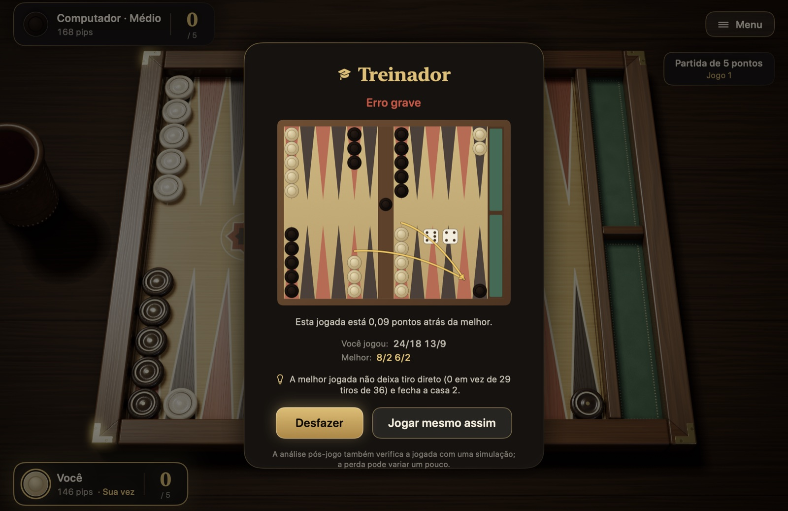
Figura 5.4Cartão do Treinador. A jogada feita está 0,09 ponto atrás da melhor; as setas do esquema mostram a jogada melhor, e a linha com a lâmpada dá o motivo.
O cartão do Treinador, a análise das jogadas, o painel de exame e o cartão de compartilhamento também dizem, em uma frase, por que a melhor jogada é melhor; a frase fica na linha que começa com uma lâmpada, por exemplo “A melhor jogada captura uma peça e fecha a casa 5”. O app compara como as duas jogadas deixam o tabuleiro e conta só as diferenças a favor da melhor jogada, no máximo duas: captura, o número de blots e de tiros deixados, um ponto novo ou uma âncora, o comprimento do prime, a fuga das peças de trás ou a retenção das do adversário, os pontos no quadrante interno, o número de peças retiradas, as chances de gammon e o risco de gammon. Se outra candidata estiver selecionada no exame, a frase é formulada em relação a essa jogada.
Na seção “Jogo” dos Ajustes, há opções que facilitam cada jogada; todas vêm ativadas por padrão, menos os botões “Dica” e “Desfazer” e o “Treinador”:
Rolar automaticamente: Quando chega a sua vez, os dados são rolados sozinhos. Nos lances em que você pode dobrar, o app espera: a decisão da dobra é sua. Com a opção desativada, você mesmo rola a cada vez, com o botão “Rolar os dados” ou a tecla Espaço.
Confirmar as jogadas automaticamente: A jogada termina sozinha com o último passo. Com a opção desativada, você encerra a jogada com o botão “Concluir” (Return); se “Desfazer” estiver ativado, até lá você pode desfazer passos.
Jogar automaticamente as jogadas obrigatórias: Se só houver uma jogada permitida, o app a faz e a vez termina.
Destacar as peças que podem ser movidas e Marcar os destinos com um anel: Ativam e desativam o destaque das peças e os anéis verdes. Com os anéis desativados, o anel só aparece no destino que você escolhe pelo teclado.
Mostrar o botão Dica e Mostrar o botão Desfazer: As duas vêm desativadas por padrão: não é possível pedir sugestões nem desfazer um passo jogado. Quando você as ativa, os botões aparecem no canto inferior direito e os atalhos ⌘I e ⌘Z também funcionam. Enquanto “Desfazer” estiver desativado, a sugestão só pode ser pedida antes do primeiro passo.
Treinador: Desativado por padrão. Ao ativar, aparece embaixo a opção “Limiar de aviso”: “Todos os erros” ou “Só erros graves”. Detalhes acima.
5.4 Dobrar e responder a uma oferta
A dobra só existe nas regras internacionais. Quando for a sua vez e o cubo estiver no centro ou com você, clique no botão “Dobrar” (⌘D) antes de rolar os dados. O botão mostra o valor para o qual o cubo vai subir, por exemplo “Dobrar ×2”. O computador responde na hora: se aceitar, o cubo passa para ele e o jogo continua; se recusar, você ganha o jogo.
Quando o computador dobra, aparece um cartão na tela:
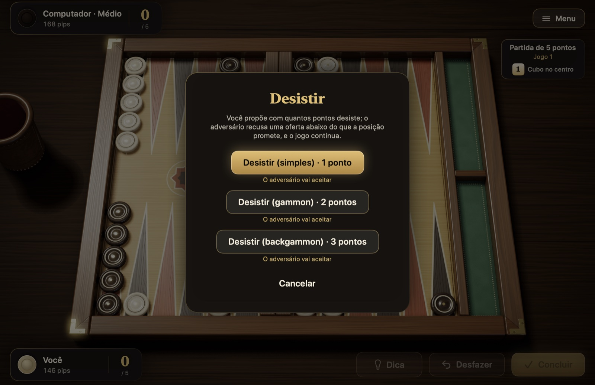
Figura 5.5O cartão de oferta de dobra.
Aceitar: O jogo continua valendo o dobro, e o cubo passa para você.
Recusar: Você entrega o jogo; o adversário ganha tantos pontos quanto o valor do cubo antes da oferta.
Beaver: Aparece numa sessão, se “Beaver” estiver ativado. Você aceita a dobra e dobra o cubo mais uma vez na hora, e o cubo fica com você.
Dica: Aparece se “Mostrar o botão Dica” estiver ativada nos Ajustes; mostra a sugestão do motor Mestre para a sua decisão.
Quando você dobra e o computador responde com um beaver, aparece um cartão parecido: você aceita, recusa ou, se “Raccoon” estiver ativado, dobra o cubo mais uma vez.
O valor do cubo e com quem ele está aparecem abaixo das informações da partida, no canto superior direito: “Cubo no centro”, “Cubo com você” ou “Cubo com o adversário”. Numa partida, no primeiro jogo em que um dos lados está a 1 ponto do objetivo, o cubo não é usado, e ali aparece “Jogo Crawford”.
5.5 Desistir e encerrar a sessão
Durante o jogo, escolha “Desistir” no menu Jogo ou no cartão de pausa. No cartão, você mesmo propõe com quantos pontos desiste: simples, gammon ou, nas regras internacionais, backgammon. Embaixo de cada opção, o cartão já mostra se o adversário vai aceitar ou não. O adversário recusa uma oferta abaixo do que a posição promete, e o jogo continua; o placar da partida e o cubo também entram na conta. Os níveis impossíveis não aparecem no cartão: se você já começou a retirar peças, o gammon e o backgammon não são mais possíveis, e, numa partida, também não é oferecido um nível maior do que aquele que já daria a vitória na partida ao adversário.
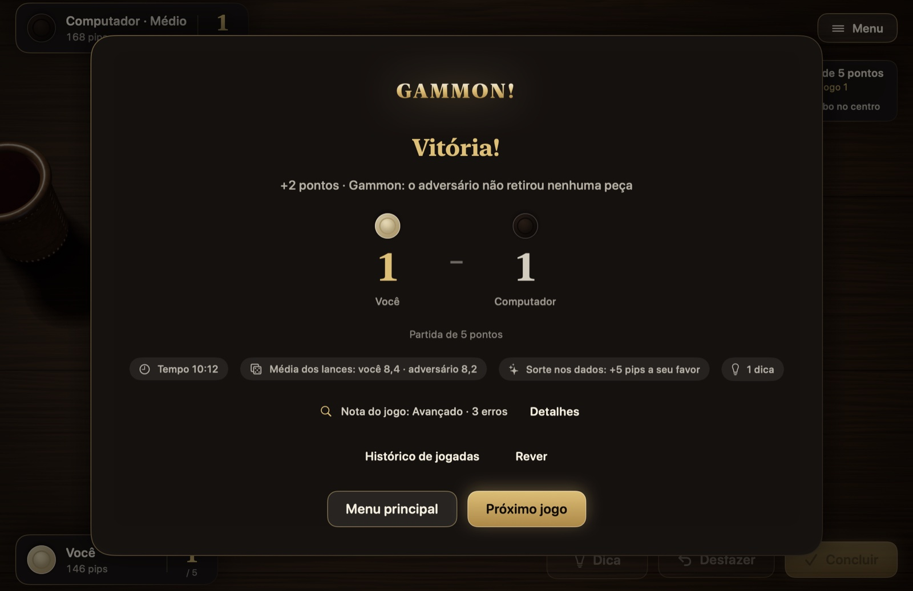
Figura 5.6O cartão Desistir.
O computador também pode desistir por conta própria numa corrida sem esperança.
A sessão só pode ser escolhida nas regras internacionais; o tavla turco não tem sessão. Numa sessão não há duração de partida; quem encerra a sessão é você, com “Encerrar sessão”. Se você encerrar entre um jogo e outro, pelo cartão de fim de jogo, a sessão termina na hora. Se quiser encerrar durante um jogo, você desiste do jogo em andamento; se o adversário aceitar, os pontos do jogo são anotados e a sessão termina. O resultado da sessão vai para o arquivo e para as estatísticas.
5.6 Pausar e continuar a partida depois
O botão “Menu”, no canto superior direito, ou a tecla Esc pausa o jogo; apertando Esc de novo, o jogo continua. O cartão de pausa tem “Retomar”, “Ajustes”, “Como jogar”, “Histórico de jogadas”, “Partidas”, “Desistir” e “Sair da partida”. Embaixo de tudo aparecem os IDs da posição e da partida da posição em andamento, no formato GNU Backgammon; “Copiar IDs” copia os dois para a área de transferência e “Compartilhar” compartilha a posição como imagem; os dois são explicados na seção 5.8. “Salvar na biblioteca” adiciona a posição à Biblioteca (seção 5.12).
As partidas são salvas automaticamente. Com “Sair da partida”, você pode voltar ao menu principal e fechar o app; “Continuar”, no menu principal, reabre a última partida de onde ela parou. Se você tiver várias partidas, o cartão “Partidas” lista as partidas em andamento e o arquivo das partidas encerradas. Você volta a uma partida em andamento com “Retomar”, remove a que não quiser com “Apagar” e revê uma partida encerrada com “Ver”, a partir do primeiro jogo; o botão do histórico de jogadas abre os jogos e as jogadas dela para rever a partir do jogo que você escolher. Cada linha também mostra o conjunto de regras da partida e as regras opcionais ativadas. A linha “Examinar a posição da área de transferência” do cartão monta no tabuleiro um ID de posição copiado no formato GNU Backgammon (com o ID da partida, se houver) quando você aperta “Ver no tabuleiro”; o motor Mestre avalia a posição, detalhes na seção 5.8.
Partidas jogadas em outros programas também entram no arquivo: o botão “Importar…” do cartão “Partidas” lê os arquivos .mat do Jellyfish e do XG, os arquivos .xg do próprio XG e os arquivos .sgf do GNU Backgammon. Como o arquivo não diz qual jogador é você, o app mostra os nomes dos dois jogadores e pergunta “Qual jogador é você?”; os resultados e a análise são mostrados do ponto de vista desse jogador. Um jogo que contém uma jogada ilegal é cortado nesse lance, e o número de jogos cortados é informado. A partida importada aparece no arquivo com a etiqueta “Importado” e os nomes do arquivo, e pode ser revista com “Ver”; quando o arquivo enche e as partidas antigas são apagadas, as importadas ficam. Cada jogo do arquivo, inclusive das suas próprias partidas, pode ser analisado depois pelo motor Mestre com o botão “Analisar” do histórico de jogadas; os erros, as candidatas e a sorte nos dados são examinados como na seção 5.7. “Analisar tudo”, no cabeçalho “Partidas encerradas”, examina em segundo plano, um por um, todos os jogos ainda não analisados; o progresso aparece na mesma linha, e o botão × interrompe a análise. Na linha de cada partida com análise concluída aparece o PR aproximado; o cartão Estatísticas reúne esses valores na tendência de PR (seção 5.7).
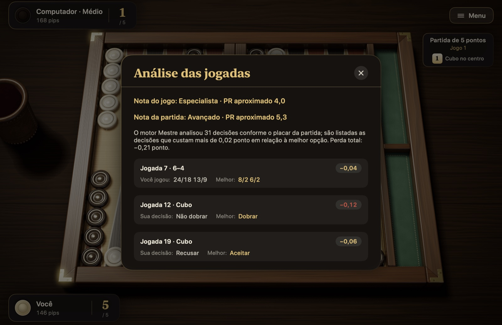
Figura 5.7Importação. No cartão “Partidas” foi lido um arquivo .mat: pergunta-se qual dos dois jogadores do arquivo é você; abaixo, as partidas do arquivo.
5.7 Fim do jogo, análise e estatísticas
Quando o jogo termina, um cartão mostra o resultado: os pontos ganhos, o motivo do gammon ou do backgammon, o placar da partida e um resumo do jogo. O resumo traz o tempo, a média dos lances dos dois lados, a sorte nos dados, as dicas que você usou e, se o Treinador avisou, o número de avisos; a sorte nos dados é calculada quando a análise termina, com o valor real dos lances na sua posição (abaixo). Quando a partida termina, o botão “Nova partida” do cartão começa uma nova partida com as suas últimas escolhas, sem abrir o painel; embaixo do botão aparece um resumo da partida que vai começar.
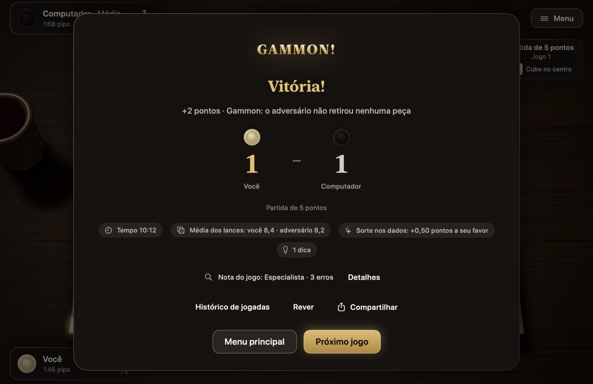
Figura 5.8O cartão de fim de jogo.
A “Nota do jogo”, no meio do cartão, resulta da análise que o motor Mestre faz das suas decisões no jogo; ao lado aparecem o PR aproximado e o número de erros. “Detalhes” abre o cartão de análise. No alto, a seção “Sorte nos dados” traz a sorte total dos dois lados, a sorte líquida e o seu lance mais sortudo e o mais azarado. A sorte de um lance é a diferença, em pontos, entre o valor da melhor jogada que aquele lance permite e a média dos 21 lances possíveis; acima de 0,3 ponto conta como sortudo ou azarado, acima de 0,6 como muito sortudo ou muito azarado, e um ícone marca isso ao lado dos dados no histórico de jogadas. Embaixo, são listadas as decisões que custaram mais de 0,02 ponto em relação à melhor opção: um esquema pequeno mostra a posição no momento da decisão e as setas da jogada melhor, e ao lado a sua jogada, a melhor e a perda. “Candidatas” abre até as cinco melhores jogadas daquele lance com as suas perdas. As decisões de dobra também entram. Quando a partida termina, é dada também a nota da partida. “Adicionar aos cartões” transforma os erros de jogada da lista em cartões para você estudar com repetição espaçada; os erros graves viram cartões automaticamente quando a análise termina (seção 5.12).
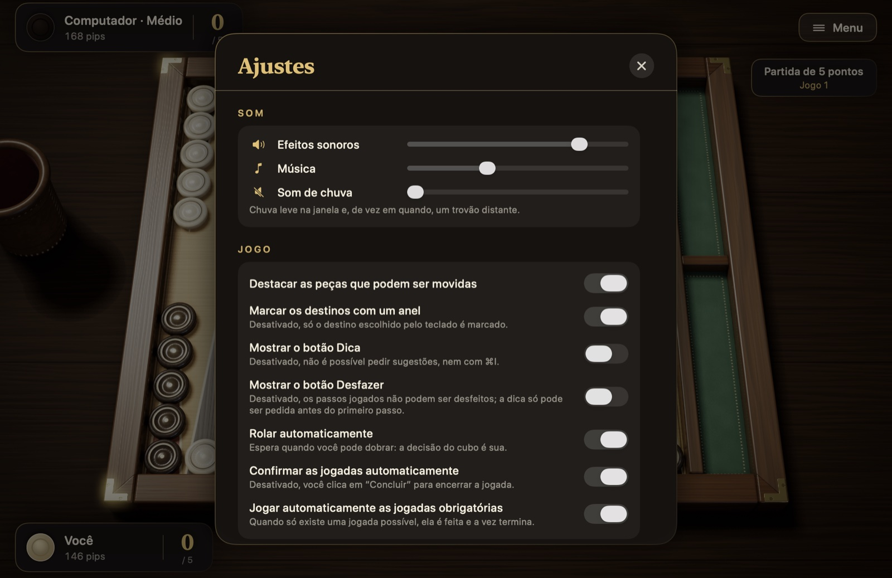
Figura 5.9Análise das jogadas.
“Ver no tabuleiro” leva a decisão ao tabuleiro: a posição é montada como estava naquele momento, a melhor jogada fica marcada com as peças e os anéis de destino, e abre o painel de exame: à direita do tabuleiro numa janela horizontal, embaixo numa janela vertical. Entre as etiquetas do painel, “Posição” volta à posição marcada; “Melhor”, “Jogada” e as outras candidatas animam aquela jogada no tabuleiro, e cada etiqueta mostra a perda da jogada em relação à melhor. Nas decisões de dobra, as etiquetas mostram as opções e as suas perdas; nada é jogado no tabuleiro. Com as setas, ou com ← e →, você passa ao erro anterior e ao seguinte; com Espaço, alterna entre a posição, a melhor jogada e a jogada feita. “Copiar IDs” e “Compartilhar” levam a posição para fora, os dois na seção 5.8; “Salvar na biblioteca” adiciona a posição à Biblioteca (seção 5.12); “Voltar à análise” volta ao cartão e “Fechar” encerra o exame.
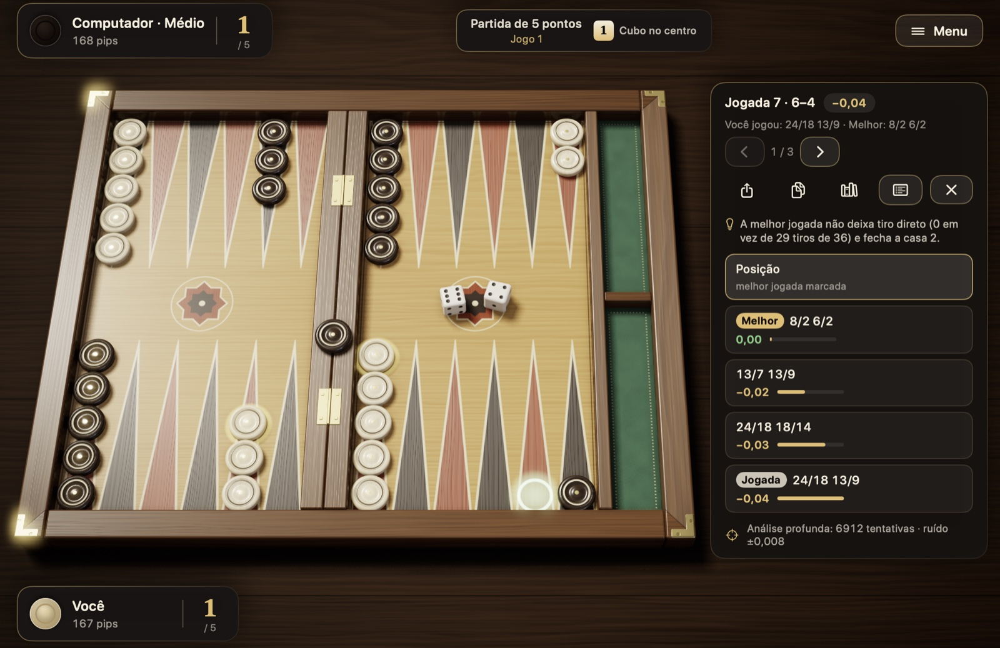
Figura 5.10Painel de exame, depois da Análise profunda. A jogada feita está 0,04 ponto atrás da melhor; a etiqueta “Posição” está selecionada e a melhor jogada está marcada no tabuleiro; a linha com a lâmpada dá o motivo, e a última linha mostra o número de tentativas e a margem de ruído.
O botão “Análise profunda” do painel reavalia as candidatas dessa decisão com muito mais simulação: à busca de 3 níveis do Mestre soma-se uma simulação de 6912 tentativas por candidata, e tira-se a média das duas. A simulação roda em duas metades de semente independentes, em blocos; a margem de ruído calculada a partir da dispersão dos blocos aparece ao lado do resultado. As perdas e a ordem das candidatas são atualizadas com os novos valores; se a diferença entre duas candidatas for menor que a margem de ruído, as duas são jogáveis. No Mac leva um ou dois segundos, no iPad um pouco mais; o progresso aparece no painel.
O menu “Rollout completo” do painel joga as candidatas até o fim do jogo. No menu, você escolhe primeiro o nível da seleção das jogadas e depois o número de tentativas: “1 nível” é rápido, e as jogadas da simulação são escolhidas pela avaliação direta da rede neural rápida (648, 1296 ou 2592 tentativas); “2 níveis” considera, a cada jogada, os 21 lances possíveis do adversário e demora cerca de três vezes mais (648 ou 1296 tentativas). Todas as candidatas são jogadas com as mesmas sequências de dados; como a redução de variância desconta do resultado a sorte de cada lance, poucas tentativas já dão uma margem de ruído estreita. A linha de resultado mostra o número de tentativas, o nível e a maior margem de ruído entre as candidatas; as perdas e a ordem são atualizadas com os novos valores. A Análise profunda é mais rápida; o Rollout completo é para quando a precisão importa.
Com os botões na parte de baixo do cartão de fim de jogo, você abre o histórico de jogadas, revê o jogo, compartilha o resultado como imagem, volta ao menu principal ou passa para o próximo jogo.
O cartão “Estatísticas”, no menu principal, mostra quantas partidas e quantos jogos você ganhou e jogou, a taxa de vitórias, os gammons ganhos e sofridos, a sua melhor sequência de vitórias, os resultados por nível, a distribuição dos dados (quantas vezes cada face saiu, com o número esperado por face), a sua tendência de PR (o PR aproximado das partidas analisadas do arquivo num gráfico de linha, da mais antiga à mais recente; abaixo, o último PR, o melhor e a média das cinco últimas partidas), os resultados da posição do dia (posições resolvidas, sequência, melhor sequência e perda média; seção 5.12) e as partidas recentes. As sessões jogadas e o saldo de pontos nas sessões são contados à parte. Com “Redefinir as estatísticas”, você começa do zero.
A seção “Conquistas” do cartão lista vinte distintivos: primeira vitória, dez e cem vitórias, primeira partida, uma partida de 7 pontos ou mais, gammon, backgammon, um jogo ganho com o cubo em 4 ou mais, um jogo e uma partida contra o Mestre, um jogo sem erros, um PR baixo, uma sequência de cinco vitórias, cem jogos, resolver a posição do dia na primeira tentativa e por sete e por trinta dias seguidos, importar um arquivo de partida, analisar um jogo do arquivo e passar uma decisão pela análise profunda. As conquistas obtidas aparecem em dourado com a data; as outras, esmaecidas com a condição; quando você obtém uma conquista, um aviso curto aparece no alto da tela. As conquistas ficam só neste aparelho, mesmo quando a sincronização com o iCloud está ativada; o app não tem servidor próprio nem pede conta.
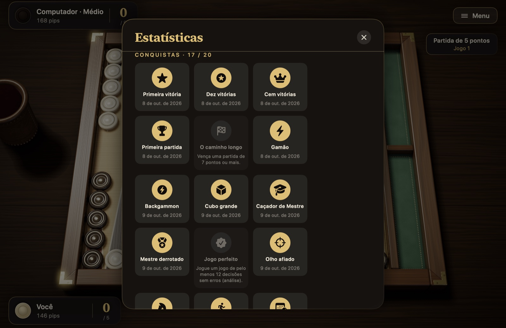
Figura 5.11A seção Conquistas do cartão Estatísticas. Os distintivos obtidos em dourado com a data; os outros, esmaecidos com a condição.
5.8 Histórico de jogadas, replay e exportação
“Histórico de jogadas” (⌘L) lista todas as jogadas dos dois lados, além das dobras e desistências. Se a partida tiver mais de um jogo, você escolhe o jogo com os botões no alto.
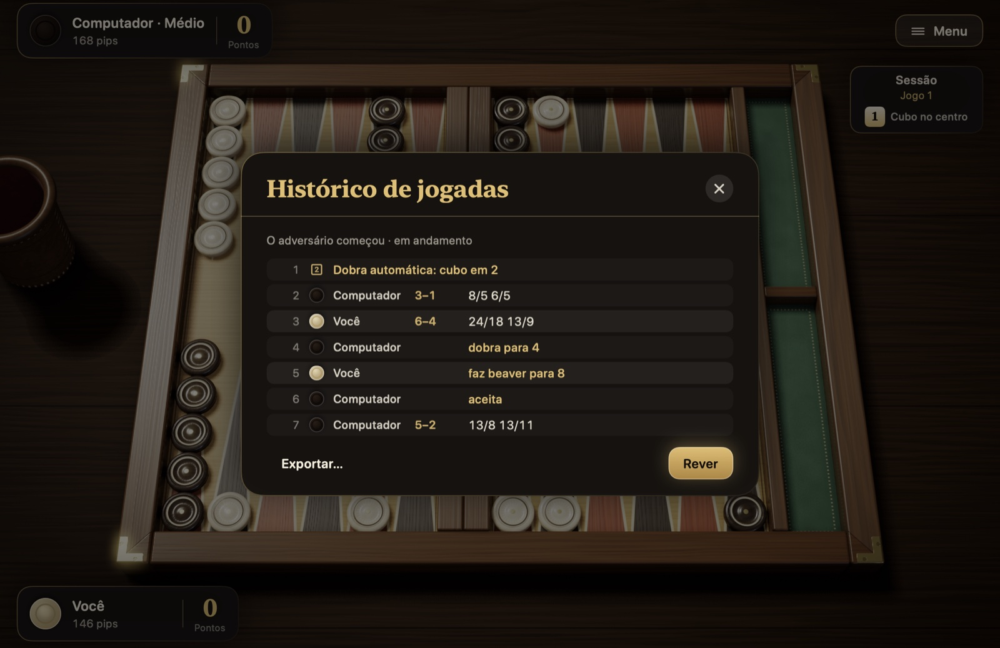
Figura 5.12Histórico de jogadas. O histórico de uma sessão: linhas de dobra automática, de jogadas com os seus dados, de dobra, de beaver e de aceitação.
Com “Rever”, você pode assistir de novo, do início, a um jogo encerrado, com as animações reais: ← e → percorrem as jogadas, e Espaço reproduz e pausa. Se a partida tiver mais de um jogo, a linha de cima do painel mostra o número do jogo e o placar no início dele; as setas ao lado passam ao jogo anterior e ao seguinte, e depois da última jogada de um jogo → vai ao início do seguinte, enquanto antes da primeira jogada ← volta ao fim do anterior. “Exportar…” salva o registro da partida em três formatos: texto legível (.txt), .mat, lido pelo Jellyfish e pelo XG, e .sgf, o formato do GNU Backgammon. Assim, você pode analisar sua partida também com esses programas; os registros deles, por sua vez, entram com “Importar…”, seção 5.6.
Toda posição tem dois IDs no formato GNU Backgammon: o ID da posição, de 14 caracteres, traz onde estão as peças; o ID da partida, de 12 caracteres, o placar, o cubo, a vez e os dados. O cartão de pausa mostra os dois; “Copiar IDs”, ali e no painel de exame, copia ambos para a área de transferência. Colando os IDs no GNU Backgammon ou em outro programa que leia esse formato, a posição é montada lá exatamente igual; você também pode publicá-los num fórum para perguntar a outras pessoas. O contrário também funciona: um ID copiado é montado no tabuleiro com “Examinar a posição da área de transferência” no cartão “Partidas”, e você vê no painel de exame a avaliação do motor Mestre e, se o ID da partida tiver dados, as melhores jogadas. O botão “Compartilhar” (no cartão de pausa, no painel de exame e no cartão de fim de jogo) compartilha a posição ou o resultado como imagem: um esquema do tabuleiro, o placar e linhas de explicação, com os IDs e a página do app embaixo. Você pode enviar a imagem pelo menu de compartilhamento por Mensagens, Mail ou AirDrop.
5.9 Ajustes
Você chega aos Ajustes pelo menu principal ou pelo cartão de pausa. As alterações são aplicadas na hora.
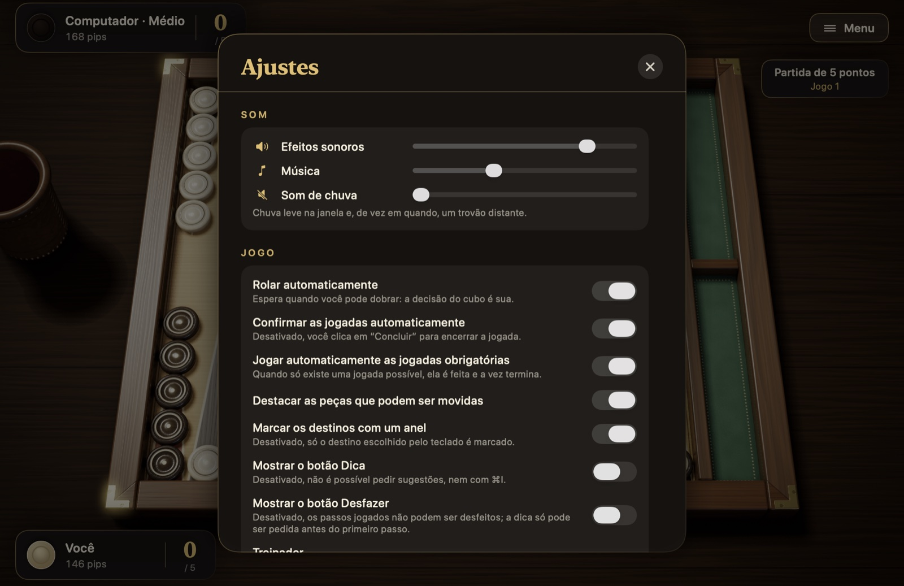
Figura 5.13Ajustes.
Som: Níveis separados para os efeitos sonoros, a música e o som de chuva na janela.
Jogo: Rolagem automática, confirmação automática e jogadas obrigatórias, destaque das peças que podem ser movidas, anéis de destino, botões Dica e Desfazer, Treinador e limiar de aviso; detalhes na seção 5.3. As regras não ficam nos Ajustes: as duas regras tradicionais do tavla turco são escolhidas no painel de nova partida.
Velocidade: A velocidade das animações e o tempo de reflexão do adversário. Com “Copo de dados” desativado, os dados são rolados sem o copo, e o lance fica mais rápido.
Aparência: O tabuleiro (“Nogueira clássica”, “Madrepérola”, “Bordo”, “Noite de ébano”, “Carvalho e oliva”), as peças (“Buxo e ébano”, “Mármore e ônix”, “Laca vermelha e preta”), os dados (“Marfim”, “Ébano”, “Âmbar”) e o feltro (“Verde”, “Bordô”, “Azul-marinho”). O estilo das peças e dos dados também muda o som; os ícones de peça na tela também ganham as cores do estilo de peças escolhido. “Quadrante interno à esquerda” espelha o tabuleiro, e as peças são retiradas pela esquerda. “Números das casas” escreve a sua numeração nas bordas.
Câmera: Câmera cinematográfica (aproximação no início da partida, um giro descendente no fim), zoom e inclinação da câmera.
Idioma e texto: Turco, inglês, francês, alemão, espanhol, português, italiano, grego e russo. Com “Sistema” selecionado, o app usa o idioma do sistema. O tamanho do texto pode ser “Sistema”, “Normal”, “Grande” ou “Muito grande”; “Sistema” segue o ajuste de tamanho do texto do sistema.
iCloud: Com “Sincronizar com o iCloud” ativado, as partidas em andamento, o arquivo, a Biblioteca e os cartões são sincronizados pelo seu iCloud Drive entre os seus aparelhos que usam a mesma conta Apple; as estatísticas e as conquistas ficam separadas em cada aparelho. A opção vem desativada por padrão. A linha logo abaixo mostra quando foi a última sincronização, e “Sincronizar agora” sincroniza sem esperar. O iCloud só está disponível na versão da App Store; se o iCloud Drive estiver desativado, a linha avisa.
5.10 Atalhos de teclado
Todas as jogadas no tabuleiro podem ser feitas pelo teclado, sem usar o mouse.
Tabela 5.1 Atalhos de teclado
Tecla
O que faz
Espaço
Rola os dados quando há um lance à espera; confirma a jogada se a confirmação automática estiver desativada; no replay, reproduz e pausa; no exame, alterna entre a posição, a melhor jogada e a jogada feita
Return
Move a peça para o destino escolhido pelo teclado; confirma a jogada se a confirmação automática estiver desativada
Tab, ⇧Tab
Percorre as peças que podem ser movidas
Setas
Percorre os destinos da peça selecionada
Esc
Pausa o jogo, e o jogo continua quando você aperta de novo; fecha um cartão aberto
⌘Z
Desfaz o último passo; funciona quando o botão “Desfazer” está ativado
⌘I
Dica; funciona quando o botão “Dica” está ativado
⌘D
Dobra
⌘L
Abre o histórico de jogadas
⌘N
Nova partida; com uma partida em andamento, inclusive entre um jogo e outro, pergunta antes
⌘?
Abre o cartão “Como jogar”
← →
No replay, jogada anterior e seguinte; no exame, erro anterior e seguinte
5.11 Acessibilidade
Leitor de tela: Dá para jogar no tabuleiro com o VoiceOver. As casas, a barra, as peças retiradas e os dados são elementos separados; em cada um, o VoiceOver lê de quem são as peças e quantas são, e se o elemento pode ser movido, está selecionado ou é um destino. Seus dados, as jogadas do adversário e as peças capturadas são anunciados em voz alta.
Redução de movimento: Se “Reduzir movimento” estiver ativado no macOS, as animações de câmera, o balanço e a paralaxe do menu, o copo de dados, os quiques das peças e a chuva dourada são desativados.
Contraste: Se o ajuste “Aumentar contraste” do macOS estiver ativado, os textos e as linhas da interface ficam mais nítidos.
Tamanho do texto: A opção padrão “Sistema” segue o ajuste de tamanho do texto do sistema (no Mac, em Ajustes do Sistema, Acessibilidade, Tela; no iPad, em Tela e Brilho); nos Ajustes você também pode escolher “Grande” ou “Muito grande”. Os cartões e os indicadores crescem de acordo.
Teclado: Todas as jogadas no tabuleiro podem ser feitas pelo teclado; as teclas estão na Tabela 5.1.
5.12 Treino: posição do dia, cartões, aberturas, biblioteca e editor de posições
O cartão “Treino”, no menu principal, reúne cinco ferramentas de treino: “Posição do dia”, “Cartões”, “Biblioteca de aberturas”, “Biblioteca” e “Editor de posições”.
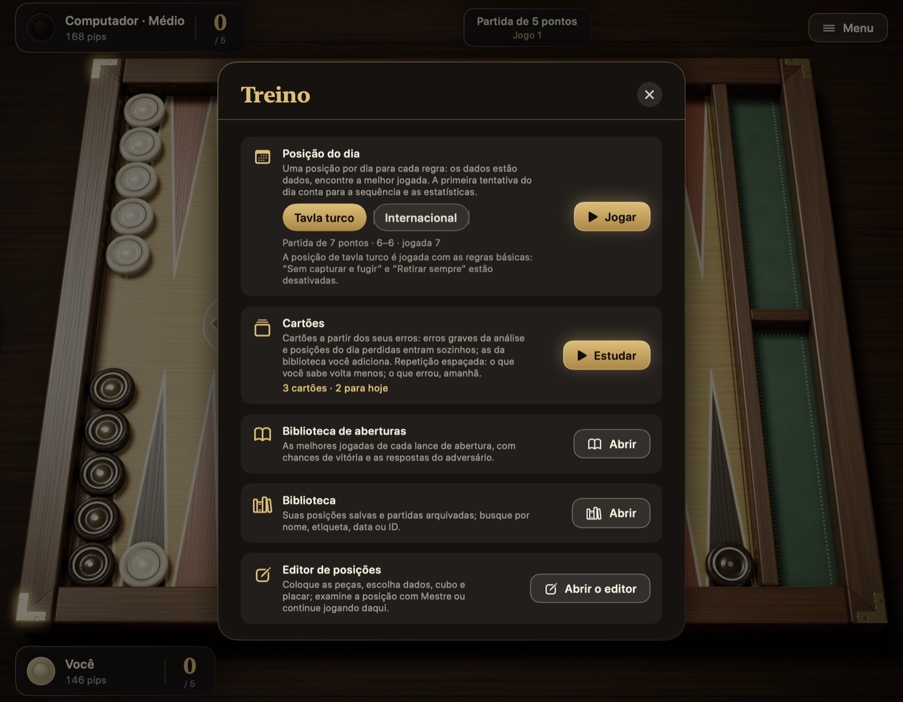
Figura 5.14Cartão Treino: o bloco da posição do dia (botões de regras, duração da partida, placar e número da jogada), os cartões (resumo do baralho), a biblioteca de aberturas, a Biblioteca e o editor de posições.
Posição do dia. Todo dia chega uma posição nova; no mesmo dia, todos resolvem a mesma posição. A posição chega separadamente para cada regra: o bloco abre com a regra escolhida no painel de nova partida e muda com os botões “Tavla turco” e “Internacional”; a posição de tavla turco é jogada com as regras básicas, com “Sem capturar e fugir” e “Retirar sempre” desativadas. Os dados já vêm dados, e você procura a melhor jogada. O bloco mostra a duração da partida, o placar e o número da jogada; “Jogar” monta a posição no tabuleiro, e você faz a sua jogada. Quando o lance termina, aparece um cartão de resultado: se a sua jogada era a melhor, ele diz “Jogada certa!”; se não, “Havia uma jogada melhor” ou “Erro grave”; abaixo, o esquema da posição com as setas da melhor jogada, a jogada feita e a melhor, e uma frase que explica o motivo. “Ver no tabuleiro” abre as candidatas no painel de exame, “Tentar de novo” propõe a mesma posição mais uma vez, e “Concluir” volta ao menu principal. Só a primeira tentativa do dia conta, seja qual for a regra: se você acerta, a sua sequência cresce um dia; se não, a sequência volta a zero; as novas tentativas não contam para a sequência nem para as estatísticas. O cartão Treino mostra se você resolveu a posição de hoje e a sua sequência e, se errou, a sua perda em relação à melhor jogada; o número de posições resolvidas, a sequência, a melhor sequência e a perda média ficam no cartão Estatísticas.
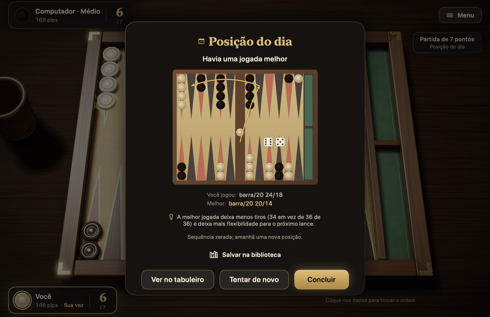
Figura 5.15Cartão de resultado da posição do dia. A jogada feita está atrás da melhor: as setas do esquema mostram a melhor jogada, as linhas abaixo a jogada feita e a melhor, e a frase com a lâmpada, o motivo.
Cartões. Os seus erros formam um baralho: os erros graves da análise de fim de jogo e as posições do dia que você errou viram cartões automaticamente; “Adicionar aos cartões”, no cartão de análise, acrescenta os outros erros de jogada, e o botão de cartão na linha de uma posição da Biblioteca com os dados definidos acrescenta essa posição. Cada cartão é uma pergunta: a posição e os dados já vêm dados, e você precisa encontrar a melhor jogada. O bloco dos cartões mostra quantos cartões há no baralho, quantos serão perguntados hoje ou quando vem o próximo, e quantos já foram aprendidos. “Estudar” pergunta, um após o outro, os cartões que já venceram (no máximo vinte); se nenhum tiver vencido, pergunta antecipadamente os dez de vencimento mais próximo. O cartão é jogado como a posição do dia; o cartão de resultado mostra em que cartão você está, quantos acertou e quando o cartão volta a ser perguntado, e “Próximo cartão” passa ao seguinte. Repetição espaçada: o cartão que você acerta volta depois de um dia, depois de seis dias e depois em intervalos cada vez maiores; o cartão que você erra volta no dia seguinte. Um cartão cujo intervalo passa de três semanas conta como aprendido. O estudo dos cartões não entra nas estatísticas nem na sequência da posição do dia.
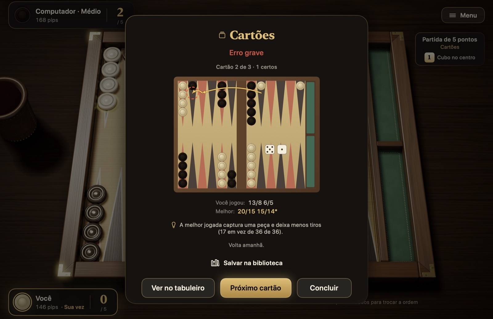
Figura 5.16Cartão de resultado do estudo dos cartões: no alto, o número do cartão e o de acertos; embaixo, o dia em que o cartão volta a ser perguntado.
Biblioteca de aberturas. Para cada um dos vinte e um lances de abertura, ela lista as melhores jogadas, com a perda em relação à melhor e as chances de vitória e de gammon. Os valores são a média da busca de 3 níveis do Mestre e de uma simulação de 5184 tentativas jogadas até o fim do jogo; as chances vêm da simulação. As etiquetas de cima escolhem o conjunto de regras: nas regras internacionais não há abertura com duplo; no tavla turco, há. Ao selecionar um lance, o esquema mostra a melhor jogada; “Respostas do adversário” abre a melhor resposta a cada lance do adversário depois dessa jogada. “Montar no tabuleiro” monta a posição de abertura com esse lance no modo de exame: as candidatas são animadas no tabuleiro, e é assim que você treina as jogadas de abertura da seção 4.3.
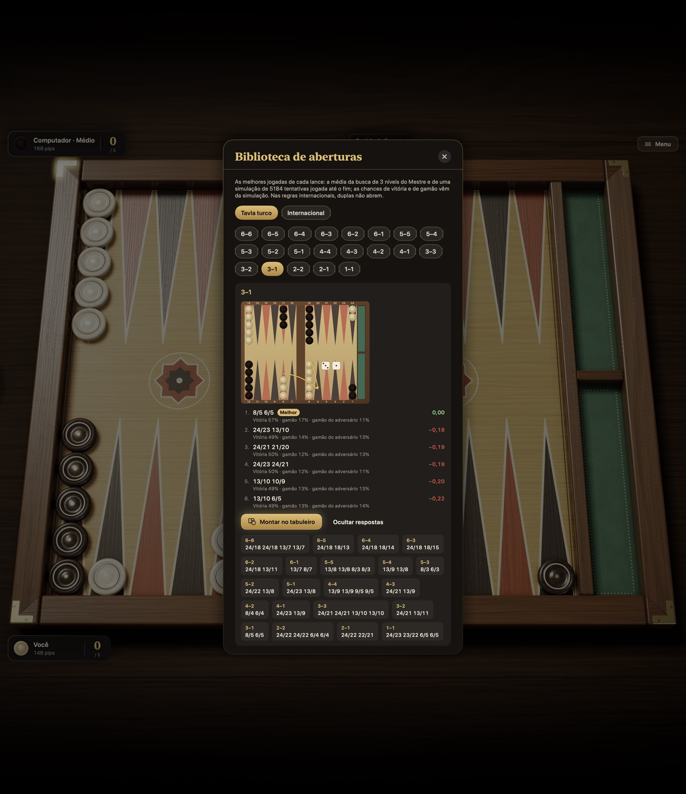
Figura 5.17Biblioteca de aberturas: conjunto de regras, os 21 lances de abertura, o esquema da melhor jogada para 3-1, as candidatas com as chances de vitória e de gammon e, abaixo, as respostas do adversário.
Biblioteca. As posições que você salvou e as partidas do arquivo ficam reunidas num só cartão. Você adiciona uma posição com “Salvar na biblioteca”, no cartão de pausa, no painel de exame, no editor de posições ou no resultado da posição do dia; a mesma posição não entra duas vezes, e o botão passa a mostrar “Na biblioteca”. Cada linha da aba “Posições” traz o nome da posição, a data, de onde ela veio, as informações da partida e dos dados, as etiquetas e a nota: com o lápis, você muda o nome, as etiquetas (separadas por vírgula) e a nota, e com a lixeira apaga a posição; “Abrir no tabuleiro” monta a posição no painel de exame, e o motor Mestre a avalia. A aba “Partidas” lista o arquivo: separa as partidas ganhas das perdidas, mostra o PR aproximado das partidas analisadas, e “Ver” revê a partida. A caixa de busca procura por nome, etiqueta, nota, data e ID; os botões de regras separam o tavla turco das regras internacionais.
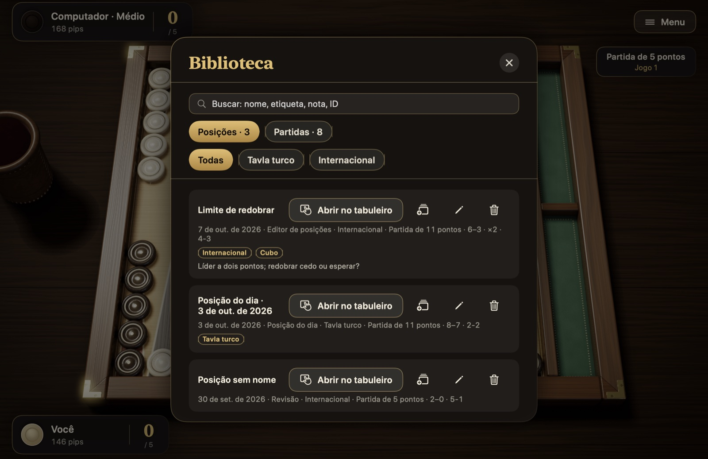
Figura 5.18Biblioteca: a caixa de busca, as abas de posições e de partidas e os botões de regras; em cada posição, ao lado do nome, o botão Abrir no tabuleiro e os botões de cartão, de edição e de exclusão; abaixo, a data, a origem, as informações da partida, as etiquetas e a nota.
Editor de posições. Você monta à mão a posição que quiser; o editor se abre pelo cartão “Treino” ou com “Abrir o editor” no cartão “Partidas”. Escolha a ferramenta “Colocar peça clara”, “Colocar peça escura” ou “Remover” e clique nas casas e na barra do tabuleiro (no iPad, toque); no Mac, um clique com o botão direito remove uma peça. Cada lado tem no máximo 15 peças, as peças fora do tabuleiro contam como retiradas, e não se coloca peça em ponto do adversário. Abaixo, você escolhe de quem é a vez, os dados (“Sem dados” também vale), o valor e o dono do cubo, a duração da partida, o placar e se o jogo de Crawford já foi jogado. “Posição inicial” monta a disposição de saída, “Esvaziar” esvazia o tabuleiro, “Trocar lados” monta a posição do ponto de vista do adversário, e “Colar” lê um ID de posição da área de transferência. “Examinar” abre a posição no painel de exame: você vê a avaliação do motor Mestre e, se deu dados, as melhores jogadas. “Jogar” começa um jogo livre a partir da posição; o jogo livre não é salvo e não entra nas estatísticas nem no arquivo. Se a posição não puder ser montada, os dois botões ficam desativados e o motivo aparece: um lado retirou todas as peças, ou o placar chegou à duração da partida.
Capítulo 6
Referência
Este capítulo é para consulta: perguntas frequentes, glossário e índice. A coluna “Ver” da tabela de termos leva às seções em que cada termo é explicado.
6.1 Perguntas frequentes
Tirei dados ruins. Posso passar a vez? Não. Se os dados permitirem alguma jogada, você é obrigado a fazê-la. A vez só passa sozinha quando nenhum dado pode ser jogado.
Posso mover uma peça do adversário? Não. Cada jogador só move as próprias peças.
Depois de capturar uma peça, posso seguir adiante com a peça que capturou? Na regra internacional, sim: capturar não encerra a viagem da peça, e você pode avançá-la com o dado que sobrou. Já no tavla turco mais difundido, é proibido capturar e fugir no seu próprio quadrante interno. No Peças e Dados, jogando com as regras turcas, essa proibição vale se “Sem capturar e fugir” tiver sido escolhido na nova partida; por padrão, ela vem desativada.
Quantas peças cabem numa casa, no máximo? Não há limite. Você pode empilhar quantas peças quiser numa casa sua.
Posso começar a retirada com uma peça capturada? Não. Para retirar, todas as suas peças precisam estar no seu quadrante interno; a peça na barra conta como fora do quadrante.
Sou obrigado a somar os dois dados e jogar com uma só peça? Não. Você também pode dar os dois dados a duas peças diferentes. Se jogar com uma só peça, a parada intermediária precisa estar aberta.
O jogo pode terminar empatado? Não. Como os jogadores jogam alternadamente, um deles sempre termina primeiro.
Tive de desfazer um ponto no meu quadrante interno. Foi um erro? Nem sempre. Às vezes, os dados não deixam outra opção; a regra da jogada obrigatória vem antes de tudo.
No Peças e Dados, movi uma peça sem querer. O que eu faço? Com os ajustes padrão, um passo jogado não pode ser desfeito. Para poder desfazer, ative “Mostrar o botão Desfazer” nos Ajustes; assim você pode desfazer os passos daquela vez até a jogada terminar. Enquanto “Confirmar as jogadas automaticamente” estiver ativada, a jogada termina junto com o último passo; se você a desativar também, pode desfazer até clicar em “Concluir”.
Por que a minha contagem de pips aumentou de repente? Uma peça sua foi capturada. Como a peça que vai para a barra volta ao início do caminho, a sua contagem de pips aumenta exatamente a distância que essa peça perdeu.
Os dados são viciados? Não. Os dados são rolados neste aparelho pelo gerador de números aleatórios do sistema; os dois lados usam o mesmo gerador e nada depende da dificuldade. Em sequências curtas, duplos seguidos ou lances ruins são normais; com o tempo, a distribuição se iguala. O cartão Estatísticas mostra quantas vezes cada face saiu, ao lado do número esperado por face.
Posso examinar no Peças e Dados uma partida jogada em outro programa? Sim. Você traz para o arquivo um registro .mat do Jellyfish ou do XG, .xg do XG ou .sgf do GNU Backgammon, com “Importar…” no cartão “Partidas”; revê os jogos e manda o motor Mestre analisá-los com “Analisar”. Detalhes na seção 5.6.
Posso montar eu mesmo uma posição e consultá-la? Sim. Com o “Editor de posições” do cartão “Treino”, você monta as peças, os dados, o cubo e o placar, e com “Examinar” vê a avaliação do motor Mestre e as melhores jogadas; detalhes na seção 5.12.
As minhas partidas passam do Mac para o iPad e vice-versa? Se você quiser. Com “Sincronizar com o iCloud” ativado nos Ajustes, as partidas em andamento, o arquivo, a Biblioteca e os cartões são sincronizados pelo seu iCloud Drive entre os seus aparelhos que usam a mesma conta Apple; as estatísticas e as conquistas continuam separadas em cada aparelho. A sincronização vem desativada por padrão e só está disponível na versão da App Store.
6.2 Termos e índice
Tabela 6.1 Termos e índice
Termo
Significado
Ver
Análise em lote
Análise, em segundo plano e um por um, de todos os jogos do arquivo ainda não analisados
Posição que chega a todos a cada dia, separadamente para cada regra: os dados já vêm dados e procura-se a melhor jogada; a primeira tentativa do dia conta para a sequência e as estatísticas
Transferência das partidas em andamento, do arquivo, da Biblioteca e dos cartões entre os aparelhos com a mesma conta Apple, pelo iCloud Drive; opcional
Se você chegou até aqui, já conhece todas as regras do gamão, os planos básicos e cada canto do Peças e Dados. O resto se aprende no tabuleiro. Jogue suas primeiras partidas no nível “Fácil”; dê uma olhada na análise dos jogos que perder, veja quais decisões custaram pontos e depois suba o nível. Os dados sorriem às vezes para você, às vezes para o adversário; a longo prazo, o que faz a diferença são as suas escolhas.
Há cinco mil anos, o gamão senta pessoas frente a frente, uma de cada lado da mesa. Espero que o Peças e Dados seja uma pequena contribuição a essa tradição e que lhe traga horas agradáveis. Suas opiniões e sugestões ajudam a melhorar o app.